|
|
Copyright (c) 2025 |
| Date | Version | État | Objet | Rédacteur | Validateur |
|---|---|---|---|---|---|
01/05/2020 |
1.0 |
Validé |
Création du document |
S.Muscarnera |
D.Cogneau |
07/01/2022 |
1.1 |
Validé |
Version asciidoc |
n.felix |
|
18/09/2023 |
1.2 |
Validé |
mise à jour v8.0 |
S.Muscarnera |
n.felix |
01/02/2024 |
1.3 |
En cours |
mise à jour v8.1 |
n.felix m.rakotomavo |
1. Introduction
1.1. Objet du document
Le présent document a pour but de décrire l’ensemble des fonctionnalités permettant la gestion électronique de dossiers.
Arcade GED est une application WEB qui assure la gestion, le classement, le stockage et la recherche de documents centralisés.
Elle gère aussi la "vie" et le flux de ces documents à travers un outil de Workflow[1].
Autrement dit, elle propose de gérer des circuits de diffusion automatiques et paramétrables des documents (pour information, pour
validation, pour révision…) entre différents acteurs.
En outre, le Workflow offre des services de traçabilité et d’historique des documents.
1.2. Fonctionnalités (résumé)
Arcade GED met à disposition les fonctionnalités suivantes :
-
Recherche multicritère grâce son système avancé de gestion documentaire.
-
Enregistrement et partage des recherches avec certains utilisateurs et/ou organisations.
-
Visualisation immédiate des bannettes de travail associées à des groupes d’utilisateurs. Les bannettes contiennent un ensemble de documents à traiter.
-
Affichage des documents résultants d’une recherche dans des listes de résultats : Vue résultats ou Vue 3 fenêtres.
-
Consultation des pièces jointes aux documents, au format PDF, TIF, DOC, etc.
-
Visualisation détaillée de tous les éléments constitutifs d’un dossier par le biais d’une arborescence illimitée.
-
Marquage d’un document comme favori de sorte à être notifié des modifications qui y sont apportées.
-
Annotation des pièces jointes et utilisation de signets.
-
Administration des documents : modification des champs de classement du document, diffusion automatique vers d’autres acteurs via le Workflow, envoi du document par email, ajout de commentaires, visualisation de l’historique des actions effectuées sur le document et visualisation de l’historique des actions Workflow.
-
Génération de statistiques dynamiques.
-
Gestion multiflux. Les droits peuvent être cloisonnés par flux et un même document pourra être consulté au travers différents flux, avec un affichage personnalisé pour chaque flux (en affichant certains champs plutôt que d’autres en fonction du flux).
À noter que de nombreux éléments dans l’application Arcade GED sont personnalisables, à l’aide notamment de l’ Admin AIRS (application
gérant la partie administration d'Arcade GED, utilisable seulement par un administrateur informatique).
Par exemple l’ensemble des vues présentes dans Arcade GED (Vue résultats, Vue Document, etc) seront entièrement paramétrables
(choix des éléments à afficher, intitulé des colonnes, etc).
1.3. Codes couleurs (Manuel)
Le présent manuel utilise différents codes couleurs pour faire référence à des éléments d’Arcade GED, des renvois vers d’autres sections,
etc.
Vous trouverez dans le tableau ci-dessous, les principaux codes couleurs utilisés :
| Polices utilisées | Fonctionnalités |
|---|---|
Police noire, en gras, en surbrillance verte. |
Il s’agit d’une référence
à un élément important d’ |
Police grise, petite majuscule |
Il s’agit d’un renvoi à une autre section du manuel. Chaque renvoi fonctionne comme un lien hypertexte. Autrement dit, dans la version PDF du manuel, vous pouvez cliquer sur ces éléments afin d’accéder directement à la section mentionnée. Les renvois sont constitués d’un nom de chapitre, suivi du numéro de page correspondant. |
|
Cette icône symbolise une |
|
Cette icône symbolise une |
|
Cette icône symbolise une |
|
Cette icône symbolise une |
|
Cette icône symbolise une |
|
L’application |
2. Identification, Autorisations
2.1. Page de Connexion
La page de Connexion permet à un utilisateur de se connecter à Arcade GED. Seules les personnes habilitées doivent pouvoir accéder aux
données exploitées par le serveur AIRS.
Pour ce faire, l’utilisateur doit renseigner son Identifiant et son Mot de passe.
Lors de la connexion, après vérification des critères de connexion et acceptation de ceux-ci, le profil de l’utilisateur est chargé. Celui-ci dispose alors des droits et accréditations qui lui ont été attribués par l’administrateur du système. Si les informations de connexion permettent d’authentifier l’utilisateur et qu’il possède les droits suffisants pour accéder à l’application, la page d’Accueil est affichée (cf. Écran d’accueil).
Si les paramètres de connexion de l’utilisateur sont invalides, le message Erreur d’authentification. Identifiant ou Mot de passe invalide vous en averti.
|
Dans le cas où le Mot de passe est expiré, l’utilisateur doit au préalable saisir un nouveau Mot de passe avant de pouvoir accéder à la page d'Accueil. |
2.2. Authentification openID via Keycloak
Si cette méthode d’authentification est paramétrée dans l’application Arcade GED, la page de connexion Keycloak apparaîtra à la place de la page de connexion
classique. L’utilisateur pourra ainsi se connecter et accéder à la page d’accueil.
Afin de permettre l’authentification via Keycloak dans l’application Arcade GED, vous devrez tout d’abord ajouter un fichier contenant la configuration de
votre client Keycloak dans le répertoire xml.
{
"realm": "master",
"auth-server-url": "https://kc.digitechcloud.fr/",
"ssl-required": "external",
"resource": "ldap_digitech",
"credentials": {
"secret": "97AyhSNKWc169ibZOPQzn6pucnD2oZG5"
},
"confidential-port": 0
}Vous pouvez récupérer ce fichier depuis l’administration de votre client Keycloak en cliquant sur cette action :
Vous allez ensuite modifier le fichier params.xml de cette façon :
-
Renseigner la balise appConfig.authenticationMode avec la valeur OIC
<appConfig>
<authenticationMode>OIC</authenticationMode>
</appConfig>-
Ajouter la balise oicConfig avec le paramètre configLocation correspondant à l’emplacement du fichier de configuration Keycloak que vous aurez récupéré auparavant
<oicConfig configLocation="config_keycloak.json" />2.3. Déconnexion
Une fois connecté à Arcade GED, l’utilisateur peut se déconnecter à tout moment en cliquant sur le bouton de Déconnexion.
Une fois l’utilisateur déconnecté, la page de Connexion est affichée.
2.4. Mot de passe oublié
Si l’administrateur a activé cette fonctionnalité, il est possible d’accéder à une fenêtre de demande de mot de passe oublié, après avoir cliqué sur le lien .
Si l’email renseigné par l’utilisateur est retrouvé dans la base, un email lui sera envoyé afin qu’il puisse réinitialiser son mot de passe.
3. Écran accueil
La page d'Accueil correspond au tableau de bord de l’application. Cette page donne accès à l’ensemble des fonctionnalités élémentaires de l’application (qui peut varier selon le profil de l’utilisateur connecté). La page d'Accueil peut être décomposée en 3 sections différentes :
|
La barre de navigation accessible à tout moment, elle regroupe un ensemble de fonctionnalités comme l’accès à des nombreux menus, la recherche etc. cf. Barre de navigation. |
|
Le bandeau latéral permet principalement le choix du flux de travail et l’affichage des bannettes cf. Le bandeau latéral. |
|
La zone de personnalisation peut être personnalisée en y insérant les éléments de votre choix (appelés panneaux ou tuiles) depuis le menu Préférences cf. La zone de personnalisation. |
3.1. Barre de navigation
La barre de navigation apparaît en en-tête sur toutes les pages de l’application. Elle affiche notamment un champ de recherche, les boutons d’accès aux principales fonctionnalités et l’image de profil de l’utilisateur connecté. Différentes actions sont accessibles depuis la barre de navigation.
3.1.1. Retour à l’accueil
L’icône permet de retourner à l’écran d’accueil de l’application (qui correspond au 1er écran affiché après votre
connexion à Arcade GED ).
3.1.2. Recherche rapide
Le champ de recherche rapide permet de rechercher un élément dans Arcade GED. Les résultats de Recherche globale
affichent désormais une prévisualisation des documents en plus de la portion de texte contenant vos critères de recherche :
3.1.3. Accès à la recherche simple et 3 fenêtres
L’icône permet d’accéder au menu de recherche simple et 3 fenêtres. Retrouvez plus d’informations sur ces fonctionnalités au chapitre Recherche simple.
3.1.4. Créer un document
L’icône permet d’ajouter un nouveau document. Retrouvez plus d’informations sur cette fonctionnalité au chapitre Création de document.
3.1.5. Options
L’icône  permet l’accès à de nombreuses options différentes :
permet l’accès à de nombreuses options différentes :
On retrouve les options suivantes :
-
Création : affiche le formulaire de création de document.
-
Indexation : démarre le processus d’indexation.
-
Historique des Documents : affiche l’historique des documents consultés.
-
Presse papier : affiche le contenu du presse-papier.
-
Favoris : affiche la page de gestion des documents favoris.
-
Favoris avec suivi : affiche la page de gestion des documents favoris avec suivi.
-
Recherche : affiche le formulaire de Recherche simple.
-
Recherche avancée : affiche le formulaire de Recherche avancée.
-
Recherche plein texte : affiche le formulaire de recherche plein texte.
-
Historique des Recherches : affiche l’historique des recherches précédemment effectuées.
-
Requêtes personnelles : affiche la page de gestion des requêtes personnelles.
-
Rapports : affiche la page listant les états statistiques paramétrés.
3.1.6. Se déconnecter
L’icône permet de se déconnecter de l’application. Une fois déconnecté, vous êtes redirigé vers la page de connexion.
3.1.7. Encadré utilisateur
Vous pouvez obtenir plus d’informations sur l’utilisateur en cliquant sur l’image correspondante :
Si l’utilisateur connecté est affecté à plusieurs Organisations, il lui est alors possible de sélectionner une Organisation dans la liste déroulante correspondante. À tout moment de la navigation, l'Organisation courante pourra être modifiée. Ce menu permet également l’accès aux Préférences, (cf. Préférences) à la version d'Arcade GED ainsi qu’à la déconnexion.
|
Si un ou plusieurs délégataires sont définis pour l’utilisateur courant, il est alors possible de sélectionner le délégataire souhaité afin de disposer de ses accréditations (délégation de profil). |
|
Les actions disponibles depuis l’en-tête d' |
3.1.8. Le bandeau latéral
Le bandeau latéral est dédié à :
-
La sélection du flux à utiliser : il suffit de cliquer dans le champ correspondant puis de sélectionner le flux que vous souhaitez utiliser :
Une fois le flux sélectionné, les informations liées à ce flux sont reprises dans Arcade GED (contenus et bannettes spécifiques etc.).
-
L’affichage des bannettes : il suffit de cliquer sur une bannette pour y accéder :
Une bannette représente un ensemble de documents possédant une caractéristique commune et sur lesquels une action doit être effectuée. Chaque bannette est définie par son nom et le nombre de documents à traiter qu’elle contient. Un clic sur l’intitulé de la bannette permet d’accéder à son contenu documentaire. Pour réactualiser le nombre de documents, il est nécessaire de cliquer sur l’action Vous pouvez en apprendre davantage sur les bannettes au chapitre Bannettes.
-
L’accès aux favoris : il suffit de cliquer sur Favoris ou Favoris avec suivi pour accéder aux éléments que vous avez préalablement désignés comme favoris :
Vous pouvez en apprendre davantage sur les favoris au chapitre Favoris.
-
La création d’un document via le dépôt de sa pièce jointe dans la zone dédiée : vous pouvez directement déposer un fichier dans la zone encadrée de pointillés pour débuter la création du document (le fichier déposé sera utilisé en tant que pièce jointe du nouveau document) :
Retrouvez plus d’informations sur la création du document au chapitre Création de document.
On retrouve également dans le bandeau latéral, le bouton Déverrouiller la grille. Ce bouton permet d’autoriser la modification de la taille et de la position des éléments personnalisés (panneaux) dans la zone de personnalisation. Le bouton change d’apparence en cliquant dessus avec les 2 états suivants :
Déverrouillé |
La taille et la position des panneaux peuvent-être librement ajustées. |
Verrouillé |
La taille et la position des panneaux ne sont plus ajustables. Vous trouverez plus d’informations sur la zone de personnalisation dans le chapitre ci-dessous. |
Il y a enfin, dans le coin supérieur gauche, le bouton qui permet de replier ou déplier le bandeau latéral.
3.2. La zone de personnalisation
La zone de personnalisation est un espace dans lequel vous pouvez afficher les informations de votre choix, comme les documents récemment consultés, le contenu d’une bannette etc. Chaque section est ici appelée un panneau (ou une tuile). Par défaut, aucun panneau n’est généralement affiché. Le choix des panneaux à afficher s’effectue à partir de vos Préférences. Si vous n’avez pas personnalisé cette zone, un accès aux Préférences vous sera suggéré via le bouton Accéder aux préférences :
À partir des Préférences (via l’onglet Accueil > Panneau visibles en page d’accueil), on retrouve les différents panneaux pouvant être affichés dans la zone de personnalisation :
Ces panneaux sont classés par thématique (on peut voir ci-dessus qu’il s’agit des panneaux Générique par exemple). Pour afficher un panneau il suffit de cocher la case correspondante. Vous pouvez parfois déterminer le Nombre maximum d’éléments à afficher dans un panneau via la colonne correspondante. La colonne Style permet d’associer une couleur spécifique à un panneau. Une fois les panneaux à utiliser définis, pensez à sauvegarder vos modifications via le bouton . Dans l’exemple ci-dessous, on voit la zone de personnalisation avec les panneaux Derniers documents consultés (Dernières consultations) et Favoris :
3.2.1. Ajuster les panneaux
La position et la taille des panneaux peuvent être ajustées. Vous devez pour cela vérifier que le bouton Déverrouiller la grille (visible dans le coin supérieur droit du bandeau latéral) soit bien déverrouillé. Le bouton change d’apparence en cliquant dessus avec les 2 états suivants :
Déverrouillé |
La taille et la position des panneaux peuvent-être librement ajustées. |
Verrouillé |
La taille et la position des panneaux ne sont plus ajustables. |
4. Bannettes
Une bannette représente un ensemble de documents possédant une caractéristique commune et sur lesquels une action doit être effectuée.
La liste les bannettes disponibles dépend de la configuration applicative. Les bannettes sont notamment disponibles depuis le panneau latéral de la page d’Accueil :
Les bannettes sont disponibles depuis la page d’Accueil :

Le bouton vous permet de rafraîchir le contenu de toutes les bannettes. Vous pouvez cliquer sur l’intitulé d’une bannette pour l’ouvrir en Vue résultats :
Pour plus d’informations au sujet des tables de données, veuillez-vous référer à la section Table de données.
4.1. Panneau bannette
Le panneau dédié aux bannettes se présente comme suit :
Un clic sur l’intitulé de la bannette ou sur l’icône permet d’accéder à la Vue résultats correspondante. Pour réactualiser le nombre de documents propre à une bannette dans le menu Bannettes, il est nécessaire de cliquer sur l’action .
Vous disposez d’un bouton permettant de rafraichir l’ensemble des bannettes en un clic. Pour plus d’informations au sujet des tables de données, veuillez-vous référer à la section Table de données.
5. Autres interfaces
5.1. Notifications
L’en-tête de page permet aussi de visualiser les messages de notification. Il existe quatre types de messages pouvant être affichés dans la zone de notification :
-
Les messages d’information s’accompagnent du symbole
 .
.
Exemple : lorsqu’un document auquel vous souhaitez accéder est verrouillé par un autre utilisateur. -
Les messages d’avertissement s’accompagnent du symbole
 .
.
Exemple : lorsqu’il n’y aucun résultat suite à une recherche. -
Les messages d’erreur s’accompagnent du symbole
.
Exemple : si vous tentez de vous connecter avec des identifiants erronés. -
Les messages de validation s’accompagnent du symbole .
Exemple : suite à la création réussie d’un document.
5.2. Barre d’actions
Les barres d’actions se situent essentiellement en tête de page ou en tête des tables de données.
Les barres d’actions se découpent en deux zones :
-
Sur la gauche de la barre vous trouverez:
-
L’icône qui permet d’afficher la page précédente (ou page mère)
-
Selon la page que vous consultez, l’action qui permet de rafraichir le contenu de la page courante
-
Les actions secondaires (Ajouter aux favoris, etc).
-
-
Sur la droite de la barre se trouvent les actions principales (Sauvegarder, etc).
5.3. Fenêtres modales
Les fenêtres modales sont utilisées afin d’afficher un complément d’information, demander une confirmation, sélectionner une valeur complexe, etc. Ces fenêtres peuvent être déplacées (en sélectionnant la partie haute), mais empêche l’utilisateur d’effectuer toute action supplémentaire sur l’écran précédent. Dans certains cas, ces fenêtres sont redimensionnables :
5.4. Table de données
Les tables de données affichent des données sous forme tabulaire. De nombreuses données sont agencées ainsi dans Arcade GED (Vue résultats, Historiques, certains éléments au sein de la Vue Document, etc).
Selon le type de table, le nombre de lignes affichées peut être modifié en sélectionnant une nouvelle valeur dans la liste Résultats par page.
Par défaut les données sont affichées dans l’ordre où elles ont été configurées. Toutefois, il est possible de modifier l’ordre d’affichage en cliquant sur la colonne souhaitée afin de définir le tri applicable. Pour annuler le(s) tri(s) appliqués, veuillez cliquer sur l’action . En activant les tris cumulatifs (cf. Données Personnelles l’ordre des tris tel qu’il est appliqué est indiqué sur la colonne correspondante) :
|
1 correspond au premier tri effectué, puis 2 pour le suivant, etc. |
Vous pouvez naviguer de page en page en utilisant les boutons de navigation ou en cliquant sur le numéro de page souhaité (ces boutons accessibles sur la droite, sont dupliqués en haut et en bas du tableau). Les boutons de navigations fonctionnent comme suit :
| Boutons | Actions correspondantes |
|---|---|
|
Page précédente Page suivante : permet de naviguer de page en page. |
|
Première page / Dernière page : permet d’accéder directement à la première ou à la dernière page. |
|
Accès direct à un numéro de page : cliquez sur le numéro d’une page afin d’y accéder directement. La page actuellement affichée est indiquée en caractère gras. |
5.5. Pickers
Les pickers sont des composants graphiques utilisés à de nombreuses reprises dans l’application. Aussi appelé sélecteur, un picker
correspond à un écran de sélection d’objet, qui apparaît suite à un clic sur une icône. Ces composants facilitent la sélection de valeur.
Différents types de picker sont utilisés dans Arcade GED.
5.5.1. Picker de date
Le picker de date, symbolisé par l’icône , permet de sélectionner une date dans le calendrier. Pour changer de mois, veuillez utiliser les simples flèches situées de part et d’autre du mois courant. Vous pouvez aussi changer d’année en utilisant les doubles flèches situées de part et d’autre du mois courant. Une fois le mois et l’année sélectionnés, il ne reste plus qu’à cliquer sur le jour souhaité. Le picker est alors fermé et le champ d’édition correspondant est mis à jour avec la date choisie.
|
Vous pouvez directement sélectionner la date du jour en appuyant sur la touche Espace. |
5.5.2. Picker d’organisation
Le picker d’organisation symbolisé par l’icône  , permet de sélectionner une organisation dans un organigramme. Pour sélectionner un élément dans l’organigramme, veuillez cliquer sur son intitulé puis sur Sélectionner. Le picker est alors fermé et le champ
d’édition correspondant est mis à jour avec l’organisation sélectionnée.
, permet de sélectionner une organisation dans un organigramme. Pour sélectionner un élément dans l’organigramme, veuillez cliquer sur son intitulé puis sur Sélectionner. Le picker est alors fermé et le champ
d’édition correspondant est mis à jour avec l’organisation sélectionnée.
5.5.3. Picker d’autorité
Le picker d’autorité, symbolisé par l’icône  , permet
de sélectionner un élément dans une liste d’autorités. Dans le cadre d’une liste d’autorité arborescente, il est possible d’ouvrir des nœuds de la liste afin de visualiser les sous-éléments. Pour sélectionner un élément dans la liste d’autorités, veuillez cliquer sur son intitulé. Le picker est alors fermé et le champ d’édition correspondant est mis à jour avec l’élément sélectionné.
, permet
de sélectionner un élément dans une liste d’autorités. Dans le cadre d’une liste d’autorité arborescente, il est possible d’ouvrir des nœuds de la liste afin de visualiser les sous-éléments. Pour sélectionner un élément dans la liste d’autorités, veuillez cliquer sur son intitulé. Le picker est alors fermé et le champ d’édition correspondant est mis à jour avec l’élément sélectionné.
5.5.4. Picker d’utilisateur
Le picker d’utilisateur est symbolisé par l’icône  . Il permet de sélectionner un ou plusieurs éléments dans une liste
d’utilisateur. Pour sélectionner un élément dans la liste d’utilisateurs, veuillez cliquer sur la ligne souhaitée. Le picker est alors fermé et le champ d’édition correspondant est mis à jour avec l’utilisateur sélectionné. Il est possible de filtrer les utilisateurs affichés en renseignant le champ situé dans l’en-tête de colonne. Dans certains cas, il est possible de sélectionner plusieurs utilisateurs ; pour ce faire, il est nécessaire de cocher les utilisateurs souhaités puis de cliquer sur SELECTIONNER.
. Il permet de sélectionner un ou plusieurs éléments dans une liste
d’utilisateur. Pour sélectionner un élément dans la liste d’utilisateurs, veuillez cliquer sur la ligne souhaitée. Le picker est alors fermé et le champ d’édition correspondant est mis à jour avec l’utilisateur sélectionné. Il est possible de filtrer les utilisateurs affichés en renseignant le champ situé dans l’en-tête de colonne. Dans certains cas, il est possible de sélectionner plusieurs utilisateurs ; pour ce faire, il est nécessaire de cocher les utilisateurs souhaités puis de cliquer sur SELECTIONNER.
5.5.5. Picker de correspondant
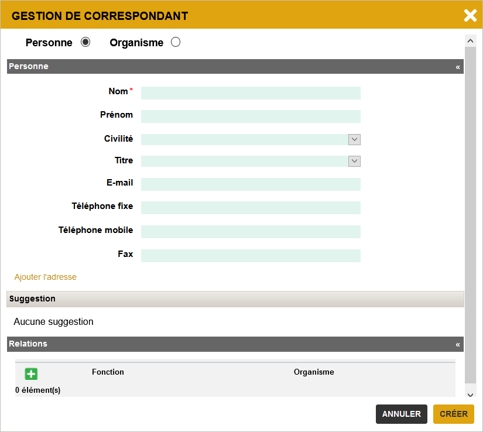
Le picker de correspondant, symbolisé par l’icône , permet de créer/modifier un correspondant. Il faut distinguer deux types de correspondant : Personne ou Organisme.
Dans Arcade GED, une personne se matérialise par son prénom, son nom, son appellation, son e-mail, son téléphone fixe/mobile, son fax et
éventuellement son adresse personnelle. Il est possible de définir les relations existantes entre une personne et un organisme. Pour ce faire,
il faut cliquer sur l’action afin d’afficher la fenêtre modale Gestion de relation :

Une relation se matérialise par la fonction de la personne au sein d’un organisme. Il est possible de sélectionner un organisme existant ou d’en
ajouter un en cliquant sur l’action (les champs du nouvel organisme devront alors être remplis). Un organisme
se matérialise par son nom, son représentant, son sigle et éventuellement son adresse. À l’issue de la création d’une relation, un clic sur le bouton APPLIQUER permet d’ajouter la relation à la personne courante. Un tableau apparaît dans la partie Relations. Vous pouvez désormais modifier la relation en cliquant sur l’icône ou la supprimer en cliquant sur l’icône  .
.
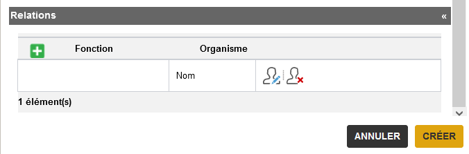
Le bouton  parfois situé à côté d’un champ de type correspondant, permet de
consulter les informations du correspondant. Les informations (non éditables) sont affichées dans la fenêtre suivante :
parfois situé à côté d’un champ de type correspondant, permet de
consulter les informations du correspondant. Les informations (non éditables) sont affichées dans la fenêtre suivante :
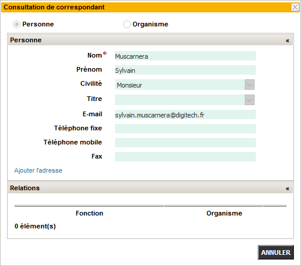
|
Le picker de correspondant n’est disponible que si le module Population est activé. |
5.6. Visionneuse

Selon le paramétrage de l’application, les pièces jointes peuvent être visualisées soit, dans un plugin tiers au sein du navigateur ou un programme tiers, soit, en utilisant la visionneuse intégrée à l’application.
La visionneuse liée au navigateur propose moins d’options que la visionneuse intégrée :
5.6.1. Visionneuse intégrée
La visionneuse permet d’afficher des documents images (TIFF, JPEG, PNG, BMP), les documents PDF (sans disposer d’Acrobat Reader sur le poste client), les documents bureautiques (DOC, DOCX, XSL, XSLX, PPT, PPTX, ODT, ODS, ODP) et les vidéos (selon configuration). La visionneuse intégrée permet également l’ajout et l’affichage de diverses annotations (selon configuration).
Quel que soit le document affiché, et selon les droits de l’utilisateur connecté, la visionneuse intégrée permet de réaliser les opérations suivantes :
| Boutons | Actions correspondantes |
|---|---|
/ |
Naviguer de page en page au sein d’un document. |
|
Appliquer un zoom avant, un zoom arrière ou même sélectionner le ratio du zoom à appliquer sur le document en cours de visualisation. Vous pouvez également utiliser les touches + et – du clavier pour faire varier le niveau de zoom. |
|
Activer / désactiver la loupe. Cette fonctionnalité remplace le curseur de la souris par une loupe, lorsque vous survolez le document. |
|
Sélectionner du texte (selon la nature du document), vous permettant d’effectuer des copier-coller par exemple. |
/ |
Réaliser des rotations sur le document en cours de visualisation. |
|
Télécharger le fichier sur votre ordinateur. |
|
Ajouter/modifier une annotation (cf. Annotation). |
|
Effectuer une recherche plein texte. Recherchez l’élément saisi dans ce champ au sein du texte (certains documents ne sont pas compatibles avec les fonctions plein texte). Vous pouvez personnaliser le type de recherche à effectuer en cliquant tout à gauche du champ de recherche, un encadré de personnalisation apparait :
Vous pouvez ici cocher les options que vous souhaitez appliquer à la recherche :
|
|
Maximiser/minimiser la taille occupée par la visionneuse. |
|
Imprimer le fichier affiché. |
|
Marquer cette page… : permet d’ajouter un signet. Cette fonctionnalité est décrite plus en détails ci-après. |
|
Supprimer des pages… : permet de supprimer des pages d’une pièce jointe PDF ou TIF. Cette fonctionnalité est décrite plus en détails ci-après. |
|
Copier des pages… : permet de copier un ensemble de pages d’une pièce
jointe PDF ou TIF dans le presse-papier. Un clic sur l’icône
|
|
Insérer des pages… issues du presse-papier au sein d’une pièce jointe de même type (selon les droits de l’utilisateur). Cette fonctionnalité est décrite plus en détails ci-après. |
|
Permet d’afficher les pages marquées d’un signet. Ce bouton n’apparait que lorsque au moins un signet est présent sur le document. Cliquez sur |
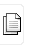 |
Permet de faire défiler l’ensemble des pages du document de la
visionneuse à travers une liste déroulante. Cliquez d’abord sur
|
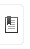 |
Permet de naviguer dans l’arborescence du document (en accédant directement à un chapitre précis par exemple). Cette icône ne sera disponible que pour certains PDF ou le plan est reconnu par la visionneuse. Après avoir cliqué sur , cliquez sur l’intitulé de la section qui vous intéresse afin d’y accéder :
|


Vous pouvez également réaliser une partie des actions décrites ci-dessus en effectuant un clic-droit dans la visionneuse intégrée, le menu contextuel suivant apparait alors :

Retrouvez ci-dessous le descriptif détaillé des fonctions : Marquer cette page…
 / Supprimer des pages…
/ Supprimer des pages…  / Copier des pages…
/ Copier des pages…  / Insérer des pages…
/ Insérer des pages…  .
.
-
Marquer cette page… : (correspond à l’icône
de la visionneuse) cette fonctionnalité vous permet de déposer un
signet sur une page. En cliquant sur Marquer cette page…, l’écran
d’Ajout/Suppression de signet apparait :
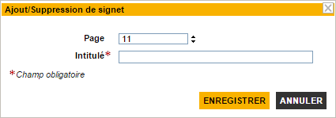
Dans le champ Page, indiquez le numéro de page sur le lequel appliquer le signet (la page courante est proposée par défaut).
Dans le champ Intitulé, indiquez le nom de ce signet. Cliquez sur 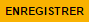 pour valider la
création du signet, ou sur  pour refermer cet écran sans sauvegarder.
pour refermer cet écran sans sauvegarder.
Pour accéder aux signets que vous avez créés (à l’aide de l’icône
cliquez sur  situé dans la partie droite de la visionneuse, puis cliquez sur le
signet souhaité afin d’accéder directement à la page concernée.
situé dans la partie droite de la visionneuse, puis cliquez sur le
signet souhaité afin d’accéder directement à la page concernée.
Vous pouvez également accéder à un signet en utilisant l’action
 disponible à partir de la fiche d’un document (cf. Actions). Un clic sur
fait apparaitre
l’écran de Liste des signets :
disponible à partir de la fiche d’un document (cf. Actions). Un clic sur
fait apparaitre
l’écran de Liste des signets :
Cliquez sur l’icône  correspondant afin de directement accéder à ce signet via la visionneuse.
correspondant afin de directement accéder à ce signet via la visionneuse.
-
Supprimer des pages… : (correspond à l’icône
de la visionneuse) un clic sur l’action de suppression de pages
affiche une fenêtre modale permettant de sélectionner les pages à supprimer :

La case Copier les annotations et signets du document source ? permet de déterminer si les annotations et les signets éventuellement localisés sur la zone à supprimer seront également supprimés (case cochée) ou non (case décochée). Au niveau de l’intitulé Première page, utilisez le curseur analogique afin de sélectionner la page à partir de laquelle la suppression sera effectuée. Vous pouvez également saisir le numéro de page dans l’encadré prévu à cet effet. Procédez de manière similaire pour la Dernière Page, afin de déterminer la page jusqu’à laquelle la suppression sera effectuée. Une fois la zone à supprimer déterminée, cliquez sur SUPPRIMER pour confirmer la suppression.
-
Copier des pages… : (correspond à l’icône
de la visionneuse) cette fonctionnalité permet de copier ou une
plusieurs pages du document affiché dans la visionneuse (afin de pouvoir les insérer ultérieurement dans ce même document). Un clic sur
cette fonctionnalité ouvre l’écran de Sélection de page(s) :
Dans cet écran, le champ Intitulé correspondant au nom de la copie que vous allez effectuer (l’intitulé vous permettra, lors de l’insertion des
pages copiées, de différencier les différentes copies effectuées). Au niveau Première page, utilisez le curseur analogique afin de
sélectionner la page à partir de laquelle la copie sera effectuée. Vous pouvez également saisir le numéro de page dans l’encadré prévu à cet
effet. Procédez de manière similaire pour la Dernière Page, afin de déterminer la page jusqu’à laquelle la copie sera effectuée. Une fois la
zone à copier déterminée, cliquez sur 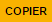. L’écran de Sélection de page(s) doit alors se refermer et la notification
 apparait. Cliquez sur
apparait. Cliquez sur  pour refermer cet écran.
Afin d’insérer la ou les pages copiées dans le document courant, vous devrez utiliser la fonction Insérer des pages (décrite ci-dessous).
pour refermer cet écran.
Afin d’insérer la ou les pages copiées dans le document courant, vous devrez utiliser la fonction Insérer des pages (décrite ci-dessous).
-
Insérer des pages… : (correspond à l’icône
) permet d’insérer les pages précédemment copiées (via la fonction Copier des pages décrites ci-dessus) dans le document présent dans la visionneuse. En cliquant sur Insérer des images, l’écran de
Sélection de page(s) correspondant apparait :
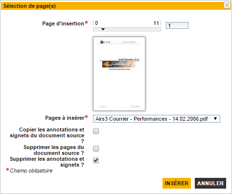
Dans cet écran, au niveau Page d’insertion, choisissez la page à partir de laquelle vous souhaitez insérer l’élément copié, en utilisant
le curseur analogique ou le champ prévu à cet effet. La liste déroulante Pages à insérer vous permet de choisir parmi les différentes copies
que vous avez pu effectuer (le nom des éléments de la liste correspondants aux intitulés utilisés lorsque vous avez effectués la
copie). La case Copier les annotations et signets du document source ? permet de déterminer si les annotations et les signets éventuellement
localisés sur la zone copiée du document original seront insérés (case cochée) ou non (case décochée) dans le document. La case Supprimer les
pages du document source ? permet de ne conserver que les pages nouvellement insérées dans le document (case cochée, vous devrez
confirmer la suppression), ou bien d’insérer les pages copiées à partir du point d’insertion, sans supprimer les autres pages (case décochée).
La case Supprimer les annotations et les signets ? permet d’effacer les éventuels annotations et signets situés dans la zone précédemment
copiée, lors de leur insertion dans le document (case cochée), ou non (case décochée). Une fois vos réglages effectués, cliquez sur
 afin d’ajouter l’élément correspondant dans le document en cours. Cliquez sur
afin d’ajouter l’élément correspondant dans le document en cours. Cliquez sur
 pour refermer cet écran sans insérer de pages dans le document courant.
pour refermer cet écran sans insérer de pages dans le document courant.
|
Vous pouvez utiliser les raccourcis clavier suivant durant la consultation de document dans la visionneuse :
|
5.6.2. Annotation
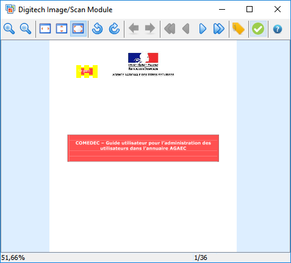
Depuis la visionneuse intégrée, il est possible de cliquer sur l’icône  pour ajouter une ou plusieurs
annotations sur la pièce jointe. Cette action est un droit qui dépend du profil de l’utilisateur.
pour ajouter une ou plusieurs
annotations sur la pièce jointe. Cette action est un droit qui dépend du profil de l’utilisateur.
Après avoir cliqué sur l’icône, la fenêtre modale Editeur d’Annotation s’ouvre. Les actions suivantes sont possibles :
| Boutons | Actions correspondantes |
|---|---|
|
Zoomer / Dézoomer. |
Modifier l’affichage du document (pleine largeur, pleine hauteur ou pleine page). |
|
/ |
Effectuer une rotation à gauche ou à droite. |
Passer à la page précédente ou à la page suivante |
|
Créer une annotation. |
|
Permet de créer l’annotation. |
|
À propos d’ImageScanApplet (affiche la version de l’éditeur d’annotation). |


Pour faire une annotation, cliquez sur et faites un cliquer-glisser sur la pièce jointe. Une fenêtre s’ouvre. Vous pouvez alors personnaliser votre annotation : texte, fond, couleur, gras, italique… :
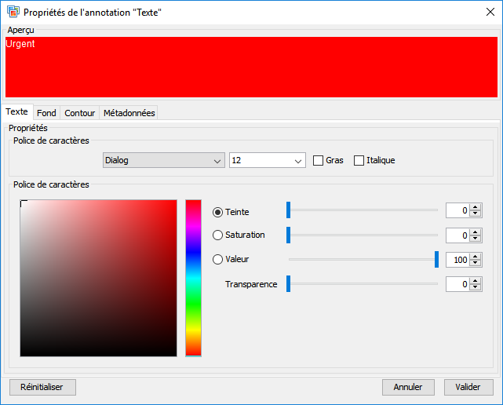
Une fois vos modifications effectuées, cliquez sur Valider. Votre annotation est ajoutée sur le document. Vous pouvez la redimensionner si vous le souhaitez.
Lorsque vous avez fini d’annoter le document, cliquez sur pour valider la création/modification/suppression des annotations. L’annotation créée est alors affichée sur la pièce jointe.

Il y a deux modes d’affichage des annotations que vous pouvez paramétrer (via les préférences utilisateur, cf. Préférences) :
-
Le mode incrusté.
-
Le mode non incrusté.
Lorsque l’annotation n’est pas incrustée dans la pièce jointe, cet icône  indique qu’une annotation a été posée.
Il faut passer la souris sur celle-ci pour en connaître le contenu (texte de l’annotation, auteur,
date). En revanche, si l’annotation est incrustée, elle est visible sans avoir à passer la souris dessus, mais peut masquer une partie du document.
indique qu’une annotation a été posée.
Il faut passer la souris sur celle-ci pour en connaître le contenu (texte de l’annotation, auteur,
date). En revanche, si l’annotation est incrustée, elle est visible sans avoir à passer la souris dessus, mais peut masquer une partie du document.
Selon le type d’annotation l’utilisateur doit survoler l’icône ] afin d’afficher le détail de la note.
En marge de la note peuvent s’afficher l’auteur et la date de création.
|
En fonction du paramétrage d’ |
5.6.2.1. Action sur une annotation
Pour modifier une annotation depuis l’écran d’annotation, effectuez un clic droit sur l’annotation à modifier, puis sélectionnez Afficher les propriétés :

Vous serez alors redirigés vers l’écran d’édition de cette annotation, et vous pourrez l’éditer comme souhaité.

5.6.3. Visionneuse liée au navigateur
La Visionneuse liée au navigateur propose des fonctions classiques de consultation de document.
Les boutons dans le coin supérieur gauche :
-
Agrandir : permet d’afficher le document en plein écran. Vous pouvez quitter le mode plein écran en appuyant sur la touche Échap du clavier.
-
Marquer cette page… : permet d’ajouter un signet via la fenêtre Ajout/Modification de signet.
-
Télécharger la pièce jointe : permet de télécharger le document correspondant.
La section Outils sur la droite vous donne accès à différentes fonctionnalités :
-
Afficher les outils : permet d’afficher les outils décris ci-dessous.
-
Imprimer : permet d’imprimer le document correspondant.
-
Page courante : permet de montrer l’adresse de la page courante (on peut par exemple copier l’adresse du lien ou encore l’ouvrir dans un nouvel onglet).
-
Aller à la première / dernière page : permet de directement accéder à la 1ère ou à la dernière page.
-
Rotation horaire : permet de faire pivoter le document dans le sens horaire.
-
Rotation antihoraire : permet de faire pivoter le document dans le sens anti-horaire.
-
Outil de sélection de texte : permet de sélectionner des éléments textuels dans le document.
-
Outil main : permet d’utiliser l’outil main pour naviguer dans le document.
En cliquant sur le bouton permettant d’afficher ou masquer le panneau latéral (tout à gauche) des fonctionnalités supplémentaires sont dévoilées :
On retrouve ici les trois fonctionnalités suivantes :
-
Afficher les vignettes : permet de faire défiler les pages du document sous forme de vignettes.
-
Afficher les signets : permet d’afficher les signets éventuellement intégrés dans le document. Vous pouvez double-cliquer dans le bandeau pour développer/réduire tous les signets simultanément.
-
Afficher les pièces jointes : ce bouton n’a pas d’utilité dans
Arcade GED. -
Afficher les calques : permet d’afficher les calques éventuellement intégrés dans le document. Vous pouvez double-cliquer pour réinitialiser tous les calques à l’état par défaut.
Le bandeau supérieur de la visionneuse regroupe également les options suivantes :
-
Zoom : regroupe les fonctionnalités liées au zoom.
-
Page en cours : affiche la page en cours sur le nombre total de pages du document.
-
Recherche : permet de rechercher un élément textuel dans le document. En cliquant sur la loupe, vous devrez renseigner un critère de recherche dans le champ correspondant :
Les flèches permettent de passer d’un résultat à un autre (dans le cas où la recherche ramène plusieurs résultats). La case Tout surligner permet de surligner l’ensemble des résultats de recherche au sein du document. La case Respecter la casse permet de ne rechercher que les éléments respectant la casse (majuscule, minuscule) exact de votre recherche. Vous pouvez également Respecter les accents et diacritiques ainsi que les Mots entiers dans votre recherche en cliquant sur l’option correspondante.
5.6.4. Format msg
La visionneuse gère les fichiers aux formats msg (mail). Si le fichier msg contient lui-même des pièces jointes, une liste déroulante est alors disponible dans la visionneuse afin de sélectionner la pièce jointe souhaitée :

5.6.5. Format non pris en charge
Certains formats de fichiers non pris en charge par la visionneuse seront toutefois affichés au sein d’une vue spécifique à partir de laquelle ils pourront être téléchargés.
Le bouton Télécharger la pièce jointe permet de télécharger le fichier correspondant.
6. Édition des pièces jointes et documents
|
En fonction de votre configuration, l’édition des pièces jointes et des documents peut fonctionner différemment. |
6.1. Édition en ligne
L’édition en ligne permet d’éditer un document directement au sein du navigateur. Elle est accessible via le bouton qui permet l’ouverture du document.
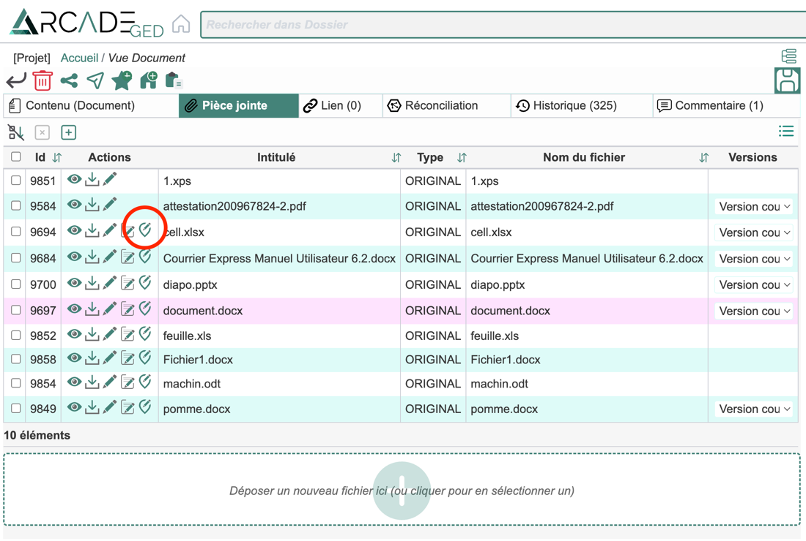
L’édition en ligne est possible via les applications Google Suite, Office365 et OnlyOffice.
Pour GoogleSuite et OnlyOffice, lorsque l’on démarre un édition en ligne, le document s’ouvre dans le panneau de droite, à l’endroit où se trouvait la visionneuse, comme ceci :
Vous pouvez donc procéder à la modification du document. Vous disposez du bouton pour sauvegarder vos modifications, ainsi que du bouton pour tout annuler, les modifications apportées ne seront pas prises en compte.
Pour l’édition en ligne avec Office365, le document s’ouvre dans un nouvel onglet.
Une fois les modifications terminées, il est nécessaire de fermer cet onglet pour ensuite valider ou annuler les modifications dans la fenêtre ci-dessous :
Les fichiers éditables sont - sauf exception - :
-
texte : .doc, .docx, .odt
-
tableur : .xls, .xlsx, .ods
-
présentations : .ppt, .pptx, .odp
|
Pour les connecteurs GoogleSuite et Office365, l’utilisateur doit être connecté avec son compte correspondant à l’application utilisée (compte Gmail ou Microsoft), une identification peut vous être demandée lors de l’ouverture d’un document. |
6.2. Mode java Web Start
En utilisant java Web start, le fonctionnement attendu est décrit au chapitre Module d’édition de document.
6.3. Mode sans client java
En mode sans client java, le module d’édition de document a le comportement suivant :
Lorsque vous éditez un document via le bouton ou une fenêtre de téléchargement liée au navigateur apparaît pour le fichier correspondant :
Vous pouvez soit ouvrir le document, soit le télécharger pour l’ouvrir ensuite. Une fois que vous avez effectué les modifications souhaitées sur le document et que vous l’avez enregistré, vous pouvez cliquer dans l’encadré intitulé Télécharger le document original pour sélectionner le fichier édité sur votre poste :
Si le document que vous sélectionnez n’a pas le même nom que document initialement édité, vous devrez confirmer votre choix en appuyant sur Valider :
En cas d’erreur, vous pouvez appuyer sur Annuler dans la fenêtre de confirmation. Pour annuler complétement la modification du document, vous pouvez appuyer sur Annuler dans l’encadré Edition de la pièce jointe.
Dans le cas des pièces jointes, lorsqu’elles ont été modifiées au moins une fois, il est possible d’afficher leurs différentes versions :
Hors version courante, vous pouvez supprimer la pièce jointe sélectionnée en cliquant sur  .
.
6.4. Mode Applet (ancien fonctionnement)
Lors de l’édition d’une pièce jointe avant la version 6.2 d'Arcade GED, il y avait plusieurs possibilités lors de l’édition d’un document via le bouton
 ou :
ou :
-
Si l’éditeur de texte, configuré sur le poste client (Microsoft Word ou Open Office), est déjà ouvert, le document à éditer s’y ouvre et un onglet supplémentaire s’ouvre dans le navigateur internet.

Cet onglet permet de valider les modifications et de choisir si le document doit être modifié avec Open Office ou Microsoft Word. Faites les modifications nécessaires sur le document dans votre logiciel de traitement de texte, enregistrez et quittez. Revenez sur le nouvel onglet Modification de la pièce jointe. Cliquez sur Valider les modifications afin d’appliquer les modifications ou Annuler si vous souhaitez annuler les changements.
-
Si l’éditeur de texte n’est pas ouvert, le document à éditer s’y ouvre. Faites les modifications nécessaires sur le document dans votre logiciel de traitement de texte, enregistrez et quittez. Dans ce cas, les modifications sont enregistrées automatiquement. Il n’y a pas besoin de valider les modifications.
7. Création de document
Il existe deux méthodes pour créer des documents dans Arcade GED :
-
À partir de la zone de dépôt de pièce jointe sur la page d’accueil.
-
À partir du menu Créer un Document.
7.1. Zone de dépôt de pièce jointe
Une fois la pièce jointe à utiliser déterminée, repérez la nouvelle zone d’ajout de document sur l’écran d’accueil. Elle se situe dans le bandeau latéral, accompagnée de la mention Déposez un fichier pour créer un nouveau document :
Vous pouvez ensuite :
-
Soit cliquer dans cette zone pour rechercher et sélectionner la pièce jointe à importer :

-
Soit faire directement glisser-déposer votre pièce jointe dans la zone dédiée :

Une fois la pièce jointe importée, vous devrez sélectionner le type de contenu à lui associer :
Une fois votre choix effectué, vous pouvez cliquer sur Sélectionner pour ouvrir la page de création du document correspondant. En bas de page, vous pouvez voir la pièce jointe correspondante automatiquement liée au document en cours de création :
7.2. Menu Créer un Document :
Depuis la page d'Accueil de l’application, si l’utilisateur connecté possède les droits suffisants pour ajouter un document, l’action de Créer un Document est disponible depuis le bouton ou via le menu Options > Création depuis l’écran d’accueil.
Le type de formulaire de création affiché dépend du paramétrage applicatif.
Dans un premier temps, il est nécessaire de sélectionner le Type de Contenu du document à ajouter. Dès lors, l’utilisateur renseigne les champs du nouveau document et saisit éventuellement un commentaire. Vous pouvez ajouter la pièce jointe en la déposant par cliquer-glisser dans la zone intitulée Déposer un nouveau fichier ici :
Vous pouvez également cliquer dans cette zone pour rechercher le fichier à importer sur votre poste :
Une fois la pièce jointe importée, vous pouvez taper l’intitulé de la pièce jointe et sélectionner son type. Si la pièce jointe choisie ne convient pas, vous
pourrez la supprimer grâce au bouton de suppression  .
.
Une prévisualisation de la pièce jointe est affichée dans l’encadré Ajout de pièces jointes. Selon le paramétrage, il est possible d’attacher plusieurs fichiers. Un clic sur l’action permet alors de créer le document. À l’issue de la création du document, la Vue Document de ce dernier est affichée.
|
Un clic sur l’action permet de créer plusieurs documents à la suite. Il peut être intéressant de cocher la case Conserver les index de façon à ce que les index des documents créés soient conservés entre chacune des créations de document. |
|
Si plusieurs fichiers sont attachés, l’utilisateur peut alors choisir de créer un document pour chaque fichier. Par défaut, un seul document est créé avec tous les fichiers joints. |
7.3. Documents urgents
Dans les documents un champ Urgence peut être rempli par la valeur Document urgent ou Normal.
Les documents désignés comme urgents seront associés à un drapeau rouge et les autres à un drapeau bleu en Vue Résultats :
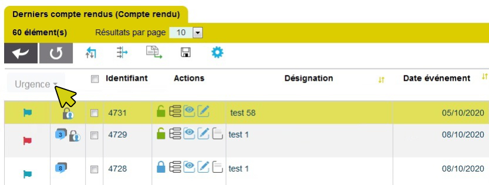
En utilisant le filtre situé au-dessus du tableau, il est possible de filtrer les résultats en affichant uniquement un seul type de document.
7.4. Indexation de Documents
Le mode Indexation permet d’indexer une liste de documents, c’est-à-dire, vérifier, corriger ou supprimer un document qui n’a pas encore été traité. Dans ce mode de fonctionnement, les documents sont automatiquement ouverts en EDITION. Le nombre de documents à indexer s’inscrit dans la partie haute de la page. Lorsqu’un document à indexer est enregistré, le document suivant est affiché et le nombre de documents restants à indexer est mis à jour. Quand tous les documents ont été indexés, vous êtes redirigés vers la page d'Accueil.
Si une requête d’indexation est définie dans la configuration, les documents à indexer sont accessibles en cliquant sur Options > Indexation.
Ouvrir une bannette contenant l’indicatif Indexation déclenchera automatiquement l’affichage en mode Indexation.
Il est possible d’indexer un ensemble de documents issu d’une recherche ou alors d’indexer la totalité des documents de cette même recherche.
|
Le module d'Indexation est accessible seulement si l’utilisateur possède les droits nécessaires. |
En disposant des droits adéquats, la vue Plan de classement sera disponible en indexation. Elle ne sera ici disponible qu’à des fins de consultation, permettant de contextualiser le document. Pour afficher cette vue, cliquez sur Afficher le plan de classement :
8. Classeurs
8.1. Description
Un classeur est un dossier dans lequel des utilisateurs peuvent grouper des documents issus de différents flux.
Ils peuvent être partagés (en modification ou consultation seulement) à d’autres utilisateurs ou services.
Un classeur :
-
est un document qui peut contenir (via un lien automatiquement créé) d’autres documents
-
est un document comme tous les autres documents stockés dans Arcade GED, plus précisément :
-
il peut contenir des pièces jointes (qui lui sont propres)
-
-
des commentaires/échanges peuvent y être inscrits
-
peut être épinglé comme tuile sur la page d’accueil (pour en faciliter l’accès)
-
8.2. Création d’un classeur
Un classeur peut être créé à partir du menu Créer un classeur :
Vous pouvez lui attribuer un Nom, une Description, un Type, ainsi que lui ajouter des pièces jointes.
Vous pouvez aussi choisir le Type de Partage que vous souhaitez :
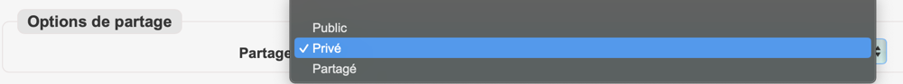
Cliquez enfin sur le bouton pour créer votre classeur.
8.3. Accéder aux classeurs
Le menu Mes classeurs permet d’accéder à vos classeurs :
Vous pouvez aussi y accéder depuis le bandeau latéral de la page d’accueil :
La liste de vos classeurs est alors disponible.
8.4. Ajout de document dans un classeur
Vous pouvez ajouter un document à un classeur depuis la Vue Document grâce au bouton ci-dessous :
Vous avez ensuite la possibilité de choisir le classeur de votre choix :
Le document est enfin visible à l’intérieur du classeur :
9. Favoris
Les documents désignés comme favoris peuvent être consultés rapidement depuis la page Favoris, accessible via des liens sur la page d’Accueil ou la barre de navigation (Options > Favoris). Tous les utilisateurs ont la possibilité d’ajouter des documents aux Favoris. Cependant, ils ne peuvent le faire que pour les documents auxquels ils ont accès.
9.1. Ajouter un Favori
Depuis la Vue Résultat, il est possible d’ajouter ou d’effacer le document aux Favoris en cliquant sur l’icône / .
Depuis la Vue Document, il est possible d’ajouter le document courant aux Favoris. Ces documents sont ensuite accessibles depuis le lien de l’Accueil ou du menu de navigation. L’ajout d’un document dans les favoris se fait en cliquant sur l’icône depuis la Vue Document ou les résultats de recherche par exemple. Une fenêtre modale s’ouvre alors : permettant de renseigner le Titre du Favori, de l’associer à une Catégorie et d’Activer le Suivi de ce document :
Cette fenêtre vous permet de spécifier les éléments suivants :
-
Titre du Favori : écrivez ici le titre à attribuer à ce favori.
-
Catégorie : permet de déterminer la catégorie dans laquelle placer ce favori. Vous pouvez directement écrire dans ce champ (afin de créer une nouvelle catégorie ou de recherche une catégorie existante) ou bien en cliquant sur la flèche à droite du champ, en sélectionnant la catégorie souhaitée dans la liste déroulante qui s’affiche.
Pour valider l’ajout du favori, cliquez sur ENREGISTRER.
9.2. Vue Favoris
La page Favoris (accessible via la barre de navigation Options > Favoris et la page d’Accueil) affiche les documents favoris sous forme arborescente au travers de dossiers. Les dossiers de type ) définissent des catégories dans lesquelles on peut intégrer des documents ( ou ).
Vous pouvez ajouter un nouveau dossier en renseignant son nom dans le champ Titre puis en cliquant sur Ajouter.
Lors du survol d’un document favori, différentes actions apparaissent sur sa droite :
| Boutons | Actions correspondantes |
|---|---|
Permet d’afficher la Vue document correspondante. |
|
|
Retirer le document des favoris (le document ne sera pas supprimé de l’application). |
Le bouton ainsi affiché indique que le suivi du document n’est pas activé (voir favoris sans suivi décrit plus haut). Cliquer dessus permet d’activer le suivi de ce favori. Les favoris dont le suivi est activé vous permettent de recevoir des notifications en temps réel dès que le document correspondant est modifié ou supprimé. Les documents dont le favori avec suivi est activé sont représentés par l’icône . |
|
|
Le bouton ainsi affiché indique que le suivi est activé sur ce favori (voir favoris avec suivi décrit plus haut). Cliquer dessus permet de désactiver le suivi de ce favori. |
En double-cliquant sur l’intitulé d’un dossier , il devient possible de le modifier. De plus, l’arborescence peut être entièrement réorganisée en glissant/déposant les dossiers. Il est ainsi possible de déplacer un document vers une autre catégorie ou encore de modifier l’ordre des dossiers dans l’arborescence.
Lorsqu’une catégorie ne contient pas de document, il
est possible de la supprimer en cliquant sur l’icône  .
.
|
10. Mes requêtes
La fonctionnalité Requêtes Personnelles permet d’enregistrer une recherche paramétrée afin de la réexécuter a posteriori. Ces requêtes peuvent également être partagées avec des utilisateurs nommés, une organisation, ou bien avec tous les utilisateurs de la GED. La création d’une requête personnelle se fait depuis la Vue résultats, en cliquant sur le bouton Enregistrer…. Une fenêtre modale s’ouvre alors pour personnaliser l’enregistrement de la requête :
-
Requête AIRS : affiche la requête de recherche au format AIRS. Cette ligne n’est pas éditable.
-
Nom de la requête : le libellé de la requête.
-
Description : le texte décrivant la requête exécutée.
-
Publique : la requête peut être visible par tous les utilisateurs.
-
Type de Partage : une requête peut ne pas être partagée (avec la valeur Personnel par exemple) ou bien avoir plusieurs types de partages.
Si le Type de Partage d’une requête est paramétré comme Personnel, celle-ci ne sera visible que pour l’utilisateur qui l’aura créée. La requête peut être partagée avec d’autres utilisateurs et organisations en sélectionnant les valeurs Partagé avec… ou Partagé avec tout le monde dans la liste déroulante Type de Partage. En sélectionnant la valeur Partagé avec…, la fenêtre modale laisse apparaître de nouveaux champs pour sélectionner la ou les organisation(s) avec lesquelles l’utilisateur souhaite partager cette requête (toute personne appartenant à une des organisations cibles sera alors en mesure de voir la requête), ou bien la ou les utilisateur(s) parmi ceux existants.
Pour activer un partage, l’utilisateur doit sélectionner le(s) organisation(s)/utilisateur(s) et cliquer sur Copier. Si une requête est partagée avec tout le monde, alors tout utilisateur ayant accès à la GED pourra consulter la requête.
Les requêtes personnelles présentent les requêtes mémorisées auxquelles l’utilisateur peut accéder. On distingue les trois thématiques suivantes : les requêtes Personnelles, les requêtes Partagées et les requêtes Abonnées.
10.1. Requêtes personnelles
Les requêtes personnelles listent les requêtes créées par l’utilisateur courant sous forme tabulaire. Les actions suivantes sont disponibles :
|
affiche la Vue résultats pour la requête souhaitée. |
|
affiche le formulaire de recherche avancée initialisé à partir de la requête souhaitée. |
|
affiche le panneau modal de modification des propriétés de la requête courante. |
|
supprime la requête courante. |
Pour plus d’informations au sujet des tables de données, veuillez-vous référer à la section Table de données.
10.2. Requêtes partagées
Les requêtes partagées listent les requêtes partagées avec l’utilisateur courant ou une de ses organisations. Les actions suivantes sont disponibles :
|
affiche la Vue résultats pour la requête souhaitée. |
|
affiche le formulaire de Recherche avancée initialisée à partir de la requête souhaitée. |
Pour plus d’informations au sujet des tables de données, veuillez-vous référer à la section Section 5.4, “Table de données”.
10.3. Requêtes abonnées
Les requêtes Abonnées correspondent aux requêtes Publiques auxquelles l’utilisateur courant est abonné. Les actions suivantes sont disponibles :
|
affiche la Vue résultats pour la requête souhaitée. |
|
affiche le formulaire de recherche avancée initialisée à partir de la requête souhaitée. |
|
désabonne l’utilisateur de la requête courante. |
Pour plus d’informations au sujet des tables de données, veuillez-vous référer à la section Table de données.
L’action permet de s’abonner à une requête Publique. En cliquant sur , le panneau modal des requêtes Publiques disponibles s’affiche.
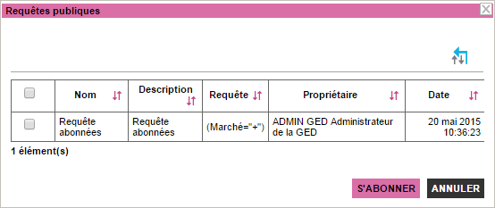
À partir de l’écran Requêtes publiques, vous pouvez cocher les requêtes Publiques auxquelles vous souhaitez vous abonner. Cliquez sur le bouton S’ABONNER pour vous abonner aux requêtes sélectionnées dans le tableau.
11. Historiques
L’historique enregistre un certain nombre d’évènements réalisés par l’utilisateur, comme les recherches qu’il a effectuées et les documents qu’il a consultés.
Pour accéder à l’historique d’Arcade GED, suivez le chemin suivant :
 Options > Historique des Recherches ou Historiques des Documents.
Options > Historique des Recherches ou Historiques des Documents.
Que vous sélectionniez l’Historique des Recherches ou Historiques des Documents, les deux types d’historiques seront affichés (avec l’historique des documents situé au-dessus de l’historique des recherches).
11.1. Historique des Documents
L'Historique des Documents présente sous forme tabulaire les documents précédemment consultés par l’utilisateur courant.
Vous avez ici accès aux actions suivantes :
|
permet d’afficher le document correspondant (Vue Document). |
|
permet d’afficher la vue arborescente. |
|
permet de retirer le document correspondant de l’historique (le document en lui-même ne sera pas supprimé). |
/ |
permet d’ajouter / supprimer le document correspondant des favoris (le document en lui-même ne sera pas supprimé). |
|
située en haut à droite du tableau, cette icône permet de retirer tous les documents historisés listés dans ce tableau (la suppression n’affecte pas les documents). |
Pour plus d’informations au sujet des tables de données, veuillez-vous référer à la section Table de données.
11.2. Historique des recherches
L'Historique des Recherches, présentent sous forme tabulaire les recherches précédemment exécutées par l’utilisateur courant. Vous avez ici accès aux actions suivantes :
|
permet d’accéder aux résultats de recherche (Vue résultats) de la requête correspondante (vous pouvez également cliquer sur l’intitulé de la requête). |
|
permet de retirer la requête correspondante de l’historique. |
|
située en haut à droite du tableau, cette icône permet de retirer toutes les recherches historisées listées dans ce tableau. |
|
permet de modifier la requête correspondante (vous serez alors redirigé vers l’écran de Recherche avancée, contenant la requête correspondante). |
12. Presse-papier
Le Presse-Papier présente sous forme tabulaire les documents copiés au cours de la session.
Le Presse-Papier peut contenir des documents, mais aussi un ensemble de pages provenant d’une pièce jointe.
Un clic sur l'ID du document ou sur l’icône permet d’accéder à la Vue Document du document.
Un clic sur l’icône permet de recharger l’élément. En effet, si un élément présent dans le presse-papier est modifié par une tierce personne, une icône s’affiche en début de ligne pour en informer l’utilisateur (l’élément est alors inexploitable au sein de l’application). Il est ainsi nécessaire de recharger l’élément afin de pouvoir l’exploiter à nouveau.
Pour retirer un document du presse-papier, veuillez cliquer sur l’action (ceci ne supprime pas le document de la GED).
Enfin, pour retirer tous les documents du presse-papier, veuillez cliquer sur l’action .
Pour plus d’informations au sujet des tables de données, veuillez-vous référer à la section Table de données.
Depuis la Vue Document, en cliquant sur l’icône , vous pouvez réaliser les actions suivantes :
-
Ajouter au presse-papier le document courant (copier).
-
Créer une copie d’un document du presse-papier dans le dossier courant (coller).
-
Déplacer un document du presse-papier dans le dossier courant.
-
Créer un lien entre un document du presse-papier et le document courant.
-
Dupliquer le document courant dans son dossier (sans l’ajouter au presse-papier).
12.1. Ajouter le document au presse-papier
Afin d’ajouter le document courant au presse-papier, cliquez sur puis sur Copier.
Après un clic sur l’action Copier, une fenêtre modale Ajout d’un élément au presse-papier s’affiche, vous permettant de saisir l’intitulé du document placé dans le presse-papier.
Cliquez sur ENREGISTRER pour valider l’ajout de l’élément dans le presse-papier.
|
Le contenu du presse-papier sera vidé à chaque déconnexion d’ |
12.2. Copier un document du presse-papier dans le dossier courant (coller).
Cette fonction est accessible seulement au sein d’un dossier. Afin de créer une copie d’un document du presse-papier dans le dossier courant (coller), cliquez sur puis sur Coller. Choisissez ensuite le dossier souhaité :
12.3. Déplacer un document du presse-papier dans le Dossier courant.
Cette fonction est accessible seulement pour un dossier. Afin de déplacer un document du presse-papier dans le dossier courant, cliquez sur puis sur Déplacer. Choisissez ensuite le dossier vers lequel effectuer le déplacement :
Contrairement à la fonction de duplication, cette action ne crée pas une copie du document, mais le déplace dans un nouveau dossier.
12.4. Créer un lien entre un document du presse-papier et un dossier.
Afin de créer un lien entre un document du presse-papier et le document courant, cliquez sur puis sur Lier à. Choisissez ensuite le dossier avec lequel effectuer la liaison :
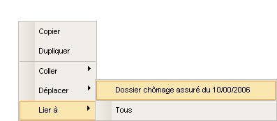
Après sélection du dossier, une fenêtre modale s’affiche afin de sélectionner le type de lien à créer (dépend du paramétrage de l’application). Le lien est ensuite visible dans l’onglet Lien de la Vue Document.
12.5. Dupliquer le document courant dans son dossier
Afin de dupliquer le document courant dans son dossier (sans l’ajouter au presse-papier), cliquez sur puis sur Dupliquer.
D’un point de vue fonctionnel cela revient à faire un « copier » puis « coller » sur le même document.
|
Sur les menus contextuels des fonctions Coller, Déplacer et Lier à, les éléments qui s’affichent sont les libellés des éléments placés dans le presse-papier. Le libellé est créé lors de l’insertion du document dans le presse-papier (Copier). La fonction s’appliquera au document souhaité, ou bien à tous les documents du presse-papier lors d’un clic sur l’élément Tous. |
Depuis la visionneuse, il est également possible d’ajouter au presse-papier un ensemble de pages issus d’une pièce jointe (cf. Visionneuse).
13. Recherches Simples et Avancées
13.1. Partie commune
La fonctionnalité de Recherche permet de définir et d’exécuter des recherches AIRS.
Depuis la page d'Accueil de l’application, la fonctionnalité de Recherche est accessible depuis  via le sous-menu Recherche, Recherche avancée et Recherche Plein texte.
via le sous-menu Recherche, Recherche avancée et Recherche Plein texte.
Il existe quatre types de recherche :
-
La Recherche globale (qui inclue la recherche Plein Texte si activée).
-
La Recherche Plein texte (qui peut être incluse dans la Recherche globale)
-
La Recherche simple.
-
La Recherche avancée.
Pendant une Recherche simple et avancée, vous pouvez passer d’un mode de recherche à un autre en cliquant sur le raccourci correspondant sur la droite :
-
: raccourci vers la Recherche avancée.
-
: raccourci vers la Recherche simple.
Il est nécessaire de cliquer sur l’action afin d’exécuter une recherche et d’afficher la page des résultats (vous pouvez également utiliser la touche Entrée du clavier).
L’action permet de vider l’ensemble des critères de recherche (mode simple) ou l’expression de recherche (mode avancé).
Le mode d’affichage des résultats permet de définir le mode de présentation des résultats de recherche (affichage Simple ou affichage 3 fenêtres). L’ensemble des critères de recherche dépendent du flux sélectionné, du Type de Contenu sélectionné et du paramétrage effectué sur la vue (via l’Admin AIRS).
13.2. Recherche Globale
Le champ de Recherche globale est uniquement disponible depuis la barre de navigation. Il permet d’effectuer une recherche sur l’ensemble des pièces jointes auxquelles vous avez accès dans Arcade GED. Cette recherche permet également de repérer les différentes itérations d’un mot au sein des pièces jointes présentes dans les résultats de recherche. Si vous travaillez sur plusieurs flux, il est également possible d’inclure tous vos flux dans les résultats de recherche.
Selon votre paramétrage, la Recherche globale pourra proposer plusieurs options qui s’affichent en cliquant dans le champ :
On retrouve les options de recherche suivantes (qui peuvent être activées (fond vert) / désactivées (fond neutre) par simple clic) :
-
Rechercher sur tous les flux : permet d’activer/désactiver la recherche sur l’ensemble des flux.
-
Lancer la recherche rapide par défaut : permet d’activer/désactiver le lancement de la recherche rapide en appuyant sur la touche Entrée. Si elle est désactivée c’est la recherche Plein-texte qui est lancée avec Entrée. La recherche rapide se lance alors en appuyant sur Ctrl+Entrée.
-
Activer la suggestion des mots : permet d’afficher des suggestions de mots basées sur votre saisie. En cliquant sur le mot suggéré, celui-ci vient automatiquement s’inscrire dans le champ de recherche :
Il suffit de cliquer sur une suggestion pour l’utiliser dans le champ de recherche. Il suffit de saisir les termes recherchés puis de cliquer sur ou d’appuyer sur la touche Entrée du clavier pour lancer la recherche. Si l’icône est disponible, elle permet de lancer une recherche basée sur du texte (Recherche Plein texte). Dans les résultats de recherche, l’élément recherché apparaît surligné dans des encadrés sur la gauche. Chaque encadré représente un document différent :
Pour chaque résultat, on retrouve les options suivantes :
|
Ajouter aux favoris. |
|
Ajouter à l’écran d’accueil (en tant que panneau). |
|
Afficher la Vue document. |
|
Afficher la Vue Arborescente. |
|
Afficher le document dans la visionneuse. |
Si le document principal n’est pas masqué, il s’affiche sur la droite dans la visionneuse. Si les résultats de recherche sont répartis sur plusieurs pages, vous pouvez naviguer entre les pages en cliquant sur les numéros situés en haut de page :
13.2.1. Filtre
Il est possible de filtrer les résultats de la Recherche globale. La zone de paramétrage du filtre peut être affichée/masquée en cliquant sur le bouton situé en haut à droite. Le filtre se présente comme suit :
La liste déroulante dans la partie supérieure permet de déterminer l’élément à filtrer :
Vous pouvez également filtrer les résultats en fonction de la Date de création et/ou de modification. Il suffit pour cela de sélectionner le symbole ainsi que la ou les dates correspondantes.
-
= : permet de filtrer sur la date renseignée.
-
> : permet de filtrer sur toutes les dates supérieures à la date renseignée.
-
< : permet de filtrer sur toutes les dates inférieures à la date renseignée.
-
{} : permet de filtrer sur toutes les dates comprises dans l’intervalle défini (il faudra ici saisir deux dates).
-
}{ : permet de filtrer sur toutes les dates non comprises dans l’intervalle défini (il faudra ici saisir deux dates).
Une fois un élément sélectionné, les champs de filtrage correspondant sont affichés et peuvent être paramétrés. Pour appliquer le filtre, cliquez sur le bouton Appliquer le filtre (disponible en haut et en bas du filtre).
Le filtre peut être désactivé en cliquant sur le bouton (disponible en haut et en bas du filtre).
13.3. Recherche simple
La Recherche Simple, accessible depuis la barre de navigation en suivant le chemin  >
Recherche permet de réaliser des recherches AIRS en spécifiant des valeurs pour un ensemble de critères.
La recherche construite est une recherche par intersection.
Par exemple, si l’utilisateur spécifie la valeur « 15/10/1980 » pour un critère de
Date de création et la valeur À CLASSER pour un critère de Type
de document, la requête AIRS construite sera de la forme : D_CREAT =
15/10/1980 ET DOC_TYPE = À CLASSER.
>
Recherche permet de réaliser des recherches AIRS en spécifiant des valeurs pour un ensemble de critères.
La recherche construite est une recherche par intersection.
Par exemple, si l’utilisateur spécifie la valeur « 15/10/1980 » pour un critère de
Date de création et la valeur À CLASSER pour un critère de Type
de document, la requête AIRS construite sera de la forme : D_CREAT =
15/10/1980 ET DOC_TYPE = À CLASSER.
La liste déroulante Type de Contenu permet de spécifier le Type de Contenu sur lequel la recherche doit être réalisée. Il est important de spécifier en premier lieu le Type de Contenu, car les critères de recherche affichés dépendent du Type de Contenu sélectionné.
Les critères de recherche se caractérisent par :
-
Un intitulé : il définit le nom du critère de recherche.
-
Un opérateur : il définit le type d’opérateur à appliquer sur le critère de recherche. Selon la configuration de l’application, les opérateurs suivants peuvent être utilisés :
-
= : permet de spécifier l’égalité.
-
> : permet de spécifier la supériorité.
-
< : permet de spécifier l’infériorité.
-
{} : permet de spécifier un intervalle de valeurs. L’intervalle de valeurs peut être spécifié sur les champs de type numérique ou de type date.
-
}{ : permet de spécifier un intervalle de valeurs "non compris entre". L’intervalle de valeurs ainsi saisi sera exclu des résultats de recherche. L’intervalle de valeurs "non compris entre" peut être spécifié sur les champs de type numérique ou de type date.
-
-
Un champ de recherche : il définit la valeur du critère de recherche.
Selon le type du champ de recherche, celui-ci ne sera pas éditable. Il faudra alors utiliser les différents "picker" de valeur disponible (pour plus d’informations sur les pickers, consultez le chapitre Pickers) :
-
Picker de date : accessible en cliquant sur l’icône , permet de sélectionner une date. La date peut être saisie manuellement en respectant le format mentionné sous le champ : jj/mm/aaaa.
-
Picker d’organisation : accessible en cliquant sur l’icône
 permet de sélectionner une organisation.
permet de sélectionner une organisation. -
Picker d’autorité : accessible en cliquant sur l’icône permet de sélectionner un élément d’une liste d’autorité.
-
Picker d’utilisateur : accessible en cliquant sur l’icône
 , permet de sélectionner un utilisateur.
, permet de sélectionner un utilisateur.
Si un critère de recherche est déjà renseigné pour un champ, le picker s’initialisera avec cette même valeur.
Pour effacer la valeur d’un champ il peut être nécessaire de cliquer sur l’icône .
|
Pour certains champs, des caractères dits "joker" peuvent être spécifiés. Une annotation du type « (1) Les caractères '+', '*' peuvent être utilisés en tant que joker. » est alors mentionnée en regard du champ concerné. Les caractères jokers peuvent servir dans les cas suivants :
|
|
Selon la configuration de votre application |
13.4. Recherche avancée

La Recherche Avancée permet de réaliser des recherches documentaires très précises, en spécifiant des valeurs pour des critères ciblés et sur un ensemble de Types de contenu. Pour réaliser une Recherche avancée, il est nécessaire de sélectionner dans un premier temps le(s) Type(s) de Contenu sur le(s)quel(s) la recherche doit être jouée. Le bouton permet de sélectionner simultanément tous les types de contenu et le bouton permet de tous les désélectionner.
Selon la configuration applicative et les droits de l’utilisateur connecté, il est possible d’activer la recherche sur tous les flux (en cochant la case Rechercher sur tous les flux ?). Dès lors, tous les Type(s) de Contenu pour tous les flux de l’utilisateur seront disponibles.
Vous pouvez désigner les types de contenu sur lesquels s’effectuera la recherche en cochant les cases associées aux intitulés souhaités (dans la partie droite de l’écran). Une fois le(s) Type(s) de Contenu souhaité(s) coché(s), vous pouvez cliquer sur l’action pour afficher la fenêtre d'Ajout d’une Locution, ou sur l’action pour ajouter une parenthèse ouvrante.
La fenêtre d'Ajout d’une Locution permet de spécifier le champ à ajouter, le type d’opérateur à utiliser ainsi que la valeur du critère. Selon le type du champ de recherche, celui-ci n’est pas éditable. Il faut alors utiliser le picker (sélecteur) de valeur.
Pour plus de détails sur les pickers, voir le chapitre Pickers. Une fois l’ajout de locution finalisé, veuillez cliquer sur le bouton AJOUTER pour mettre à jour l’expression de recherche.
Au fil de la construction de l’expression, la liste des actions possibles est mise à jour. Il est alors possible de spécifier des opérateurs interlocutions. L’action (ET) permet d’ajouter l’opérateur d’intersection interlocutions (elle permet ainsi de cumuler les effets de différentes locutions). L’action (SAUF) permet d’ajouter l’opérateur de négation interlocutions (permet par exemple d’exclure certaines valeurs de la recherche). L’action (OU) permet d’ajouter l’opérateur d’union interlocutions (permet par exemple de différencier deux groupes de locutions basés sur des critères différents, ainsi l’élément recherché devra correspondre aux critères de l’un des deux groupes et non aux critères cumulés des deux groupes).
Une fois l’expression de recherche renseignée, il suffit de lancer la recherche en cliquant sur l’action . La page des résultats de recherche (Vue résultats) est alors affichée.
13.5. Recherche dans les documents supprimés
Les documents supprimés disparaissent des bannettes dans lesquelles ils se trouvent et ne peuvent plus être retrouvés par la recherche (simple, avancée…).
Cependant, on peut toujours les retrouver via la Recherche dans les documents supprimés.
Elle est accessible en fonction des droits de l’utilisateur connecté.
On accède à cette page via la barre de navigation en cliquant sur  > Recherche dans les documents
supprimés.
> Recherche dans les documents
supprimés.
Une fois sur cette page, vous pouvez rechercher les documents supprimés. Le fonctionnement de la recherche proposée est ici similaire à celui de la Recherche simple (cf. Recherche simple).
Une fois la recherche lancée, trois actions sont possibles dans les résultats de recherche (via la colonne Actions du tableau) :
-
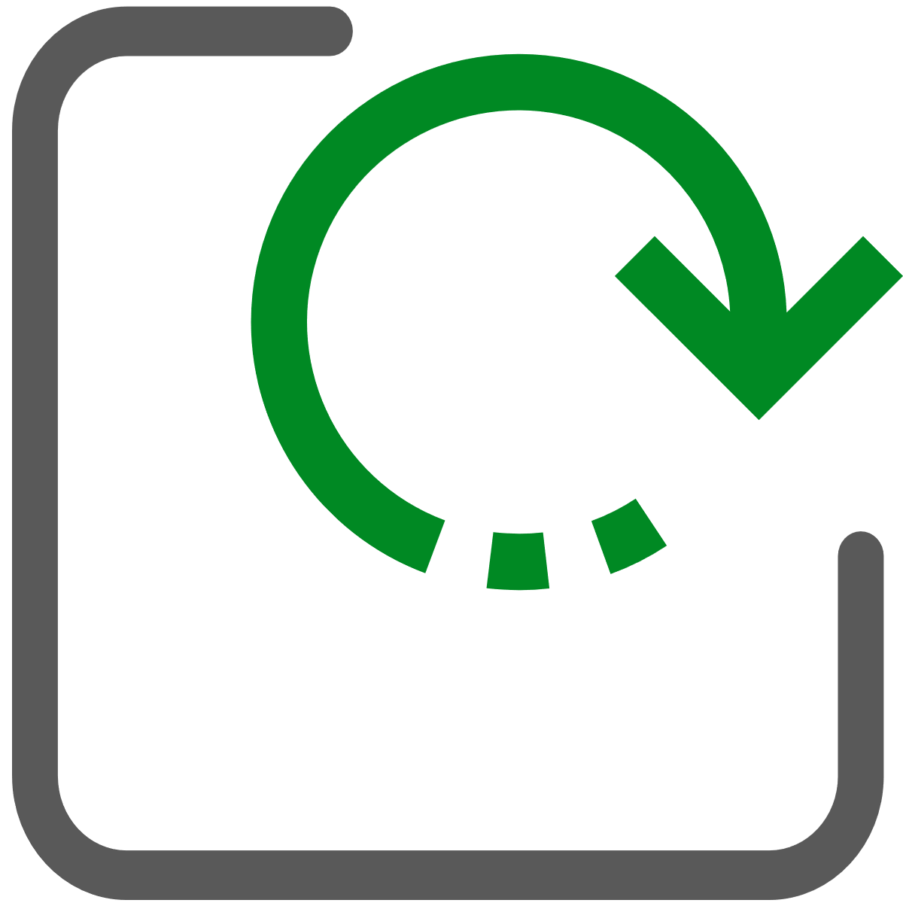 : Restaurer un document supprimé. Cliquez sur l’icône présente sur la ligne du document que vous souhaitez restaurer. Vous pouvez aussi restaurer tous les documents simultanément en cliquant sur l’icône : situé en haut à gauche du tableau.
-
: Supprimer définitivement un document. Cliquez sur l’icône présente sur la ligne du document que vous souhaitez supprimer. Vous pouvez aussi supprimer tous les documents simultanément en cliquant sur l’icône : situé en haut à droite du tableau.
-
 :
Permet de consulter la pièce jointe associée au document.
:
Permet de consulter la pièce jointe associée au document.
Vous pouvez également sélectionner unitairement des documents en cochant les cases correspondantes afin de supprimer (bouton ) ou de restaurer (bouton ) uniquement votre sélection :
14. Résultat de Recherche
14.1. Partie commune
La page d’affichage des résultats de recherche permet de visualiser les résultats d’une recherche (Recherche simple, Recherche avancée) et de visualiser le contenu d’une tablette. Il existe deux modes d’affichage des résultats de recherche : la Vue résultats et la Vue 3 fenêtres. Pour commuter d’un mode d’affichage à un autre, veuillez sélectionner la vue désirée dans la liste déroulante Vue, accessible à partir du coin supérieur droit :
|
Si aucune recherche n’a été exécutée, l’icône affichée en page d'Accueil et l’entrée du menu de navigation Vue résultats (ou Vue 3 fenêtres) sont alors grisées. |
|
La vue courante sélectionnée est mémorisée durant toute la session. |
14.2. Vue résultats

La Vue résultats permet de visualiser un résultat de recherche ou le contenu d’une bannette. Les données affichées dans la Vue résultats dépendent de la configuration. Seule la colonne de sélection et la colonne Actions ne dépendent pas de la configuration.
Un bouton de retour en haut de page représenté par une double flèche est disponible en Vue Résultats. En cliquant sur le bouton de retour en haut de page, vous êtes directement renvoyé en haut de la page correspondante :
En ajustant manuellement les proportions entre le tableau et la visionneuse, vos ajustements seront automatiquement enregistrés dans l’application.
14.2.1. Actions
La colonne Actions permet d’exécuter une action unitaire sur la ligne courante. On distingue les actions suivantes :
-
Le verrouillage du document est illustré par l’icône
 (ou
(ou
 s’il est verrouillé par vous-même).
Cliquez sur
pour déverrouiller le document.
Selon les droits de l’utilisateur, il se peut que ce bouton soit désactivé.
s’il est verrouillé par vous-même).
Cliquez sur
pour déverrouiller le document.
Selon les droits de l’utilisateur, il se peut que ce bouton soit désactivé. -
Les documents non verrouillés ne sont pas accompagnés d’icône de type cadenas dans la 1ère colonne sur la gauche. Cliquez sur pour verrouiller le document. Selon les droits de l’utilisateur, il se peut que ce bouton soit désactivé.
-
Affichage de la Vue plan de classement, illustré par l’icône (selon les droits de l’utilisateur).
-
Affichage de la Vue Document, illustrée par l’icône pour la consultation, ou par l’icône pour l’édition (selon les droits de l’utilisateur).
-
L’icône permet d’ajouter le document aux favoris.
La première colonne du tableau (sur la droite) indique par l’icône la présence de commentaire sur le document correspondant. Cette icône est également accompagnée du nombre de commentaires associés au document (« 3 » ici par exemple). En plaçant le curseur de la souris sur l’icône, on peut visualiser rapidement les commentaires correspondants. L’absence de cette icône signifie qu’aucun commentaire (visible par l’utilisateur) n’est associé au document en question.
La Vue résultats permet de réaliser des actions globales, par l’intermédiaire des icônes situées juste au-dessus du tableau :
Selon votre configuration, vous avez accès aux actions suivantes :
| Boutons | Actions correspondantes |
|---|---|
Permet de retourner à l’écran d’accueil. |
|
Rafraîchir la page. Cela permet de rejouer la requête et de mettre à jour les résultats de recherche. |
|
Modifier les critères de recherche. Cette action affiche la page Recherche simple. Si une recherche a précédemment été réalisée via la recherche simple, on retrouvera les champs précédemment renseignés. |
|
|
Permet de désélectionner tous les éléments sélectionnés (même s’ils sont sélectionnés sur une autre page du tableau). |
Tout indexer. Cette action permet de lancer la procédure d’indexation sur l’ensemble des résultats de recherche. L’indexation de la sélection est également disponible via le bouton suivant . |
|
Enregistrer la requête pour pouvoir la retrouver plus tard. |
|
|
Permet d’afficher
dans une fenêtre (Liste des signets) tous les signets qui ont été
apposés sur des documents (indépendamment de la sélection). Dans cette
fenêtre, vous pouvez cliquer sur l’icône
|
|
Permet d’effectuer une demande de signature pour le document sélectionné. |
Exporter l’ensemble des résultats de recherche au format CSV. L’export unitaire est représenté par l’icône suivant . |


|
Vous pouvez naviguer entre les différents documents listés en Vue résultats en utilisant les flèches du clavier. Vous pouvez également naviguer entre les différentes pièces jointes du document sélectionné en utilisant les combinaisons de touches suivantes : |
-
Ctrl+↑ : affiche la pièce jointe suivante dans la visionneuse.
-
Ctrl+↓ : affiche la pièce jointe précédente dans la visionneuse.
La Vue résultats permet de réaliser des actions sur l’ensemble des documents sélectionnés (chaque action étant visible ou non en fonction des droits de l’utilisateur connecté) :
| Boutons | Actions correspondantes |
|---|---|
Supprimer les documents sélectionnés. Avant que la suppression ne soit effective, une demande de confirmation de suppression indiquant le nombre de documents sélectionnés en Vue résultats vous est adressée. |
|
Indexer les documents sélectionnés. |
|
Exporter au format CSV les documents sélectionnés. |
|
Verrouiller les documents sélectionnés. |
|
Déverrouiller les documents sélectionnés. |
Selon la configuration de votre environnement, différentes options de suppression vous seront proposées. Ces différentes options permettent la suppression de documents hiérarchiquement rattachés au(x) document(s) que vous souhaitez supprimer. Il s’agit d’une hiérarchie de type Dossier - Document, telle qu’on peut l’observer dans la vue Plan de classement (cf. Vue Plan de classement) d’un document (à ne pas confondre avec l’onglet Liens d’un document, accessible en Vue Document, ne permettant que de faire des liens symboliques entre documents). Après un clic sur l’action les options suivantes pourront vous être proposées :
-
Supprimer seulement le(s) Documents) sélectionné(s) : supprime uniquement le ou les documents sélectionnés.
-
Supprimer le(s) Document(s) sélectionné(s) et les Documents enfants qui n’ont pas d’autres parents : supprime le(s) document(s) sélectionné(s) et les documents qui ont des connexions hiérarchiques de type enfant avec ces documents uniquement.
-
Supprimer le(s) Document(s) sélectionné(s) et les Documents enfants : supprime les documents sélectionnés et les documents qui ont des liens de type enfant avec ces documents, même s’ils ont des liens avec d’autres documents non sélectionnés ici.
Cliquez sur SUPPRIMER pour confirmer la suppression, ou sur ANNULER pour stopper l’opération.
|
Selon le paramétrage de votre application |
14.2.2. Tris et Filtres
Afin d’ordonner la liste des résultats de recherche, des outils de tri sont disponibles en haut de certaines colonnes (des menus déroulants, des flèches de tri () ou des champs vides). Il est possible de faire des tris multi-colonnes.
Pour certains éléments de la Vue résultats, vous pouvez utiliser des filtres afin de limiter la recherche à des éléments précis. Ces filtres se situent juste au-dessous des intitulés de colonne du tableau de la Vue résultats. Il existe deux types de filtre :
-
Les filtres de type saisie prédictive : ces filtres sont représentés par un simple encadré blanc, dans lequel vous pouvez saisir du texte. Seuls les documents contenant le texte saisi pour ce champ, seront affichés dans les résultats de recherche.
-
Les filtres de type listes déroulantes : ces filtres sont représentés par un encadré blanc, accompagné d’un triangle, comme suit : . Vous pouvez dans ce filtre accéder à une liste déroulante en cliquant sur le triangle noir. L’élément sélectionné dans cette liste conditionnera l’affichage des résultats de recherche.
Vous pouvez rétablir la valeur des tris par défaut en cliquant sur l’action plusieurs filtres pouvant être utilisés simultanément, vous pouvez annuler l’effet de tous les filtres utilisés en cliquant sur l’icône .
|
Les différentes configurations effectuées sur les tris et les filtres seront conservées si vous basculez entre la Vue Document et la Vue résultats. Autrement dit, si vous accédez à l’édition d’un document (Vue Document) à partir de la Vue résultats, le passage d’une vue à l’autre ne modifiera pas les critères de tri et de filtrage initialement utilisés en Vue résultats. |
En fonction de votre configuration, lorsque le mode d’affichage Avancé est activé, vous pouvez modifier de manière précise l’affichage des colonnes. Avec la possibilité de masquer, repositionner et redimensionner une colonne. Pour ce faire, cliquez sur l’icône qui apparait lorsque vous passez le curseur de la souris dans l’encadré supérieur d’une colonne (comme dans la colonne Intitulé du document ci-dessous) :
Cliquez sur l’icône afin de personnaliser l’affichage des colonnes ; de nouvelles options apparaissent :
Ces options vous permettent de paramétrer le tri à appliquer sur la colonne correspondante (croissant, décroissant), l’affichage groupé des informations en fonction du type de contenu de la colonne sélectionnée (Grouper sur cette colonne, Annuler le regroupement) ainsi que les colonnes que vous souhaitez afficher ou masquer (en cochant la case ou les cases avec l’intitulé correspondant dans le sous-menu Colonnes). Les options d’affichage paramétrées ici sont conservées dans les préférences de l’utilisateur.
|
Si le nombre de résultats de recherche est trop grand, la fonctionnalité de tri sera désactivée. |
14.3. Vue 3 fenêtres
La page Vue 3 fenêtres, similairement à la Vue résultats, permet de visualiser un résultat de recherche ou le contenu d’une bannette, mais divise son contenu en trois zones distinctes. Ce mode permet donc de visualiser sur un seul écran :
-
La liste des résultats de recherche, identique au fonctionnement de la Vue résultats.
-
Le contenu détaillé du document sélectionné via les informations de la Vue Document.
-
Les pièces jointes associées au document courant.
Pour sélectionner un nouveau document, il est nécessaire de cliquer sur l’icône dans la colonne Action. La colonne Etat permet de visualiser l’état du document. Les trois états qui suivent peuvent être affichés :
-
Document non verrouillé, illustré par l’absence d’icône de type cadenas.
-
Document verrouillé par moi-même, illustré par l’icône
. -
Document verrouillé par un autre utilisateur
(déposez le curseur de la souris sur cette icône pour voir le nom de l’utilisateur à l’origine du verrouillage du document).
Pour de plus amples informations sur les résultats de recherche, veuillez-vous référer à la section Vue résultats.
Pour de plus amples informations sur les détails du document, veuillez-vous référer à la section Vue document / Fiche document.
Pour de plus amples informations sur la fenêtre des pièces jointes, veuillez-vous référer à la section Écran de visualisation de pièce jointe.
|
Vous pouvez utiliser la barre de séparation afin de redimensionner les zones relatives aux résultats de recherche et à la Vue Document du document sélectionné. L’affichage de la Vue 3 fenêtres nécessite une résolution minimale de 1152 * 864. |
15. Vue document / Fiche document
15.1. Introduction
La Vue Document (également appelée Fiche Document) permet de visualiser le contenu thématisé et détaillé d’un document. Pour afficher la position du document dans l’arborescence, veuillez cliquer sur le lien Afficher le plan de classement. Si le document est verrouillé la Vue Document s’ouvre en mode CONSULTATION, sinon la Vue Document s’ouvre en mode EDITION.
La page Vue Document se divise en deux parties : la barre d’actions et la fiche détaillée.
La fiche détaillée a été organisée en plusieurs onglets (affichés selon les droits de l’utilisateur) :
-
L’onglet Contenu,
-
L’onglet Pièce Jointe,
-
L’onglet Historique,
-
L’onglet Commentaire,
-
L’onglet Lien,
-
L’onglet Réconciliation,
-
L’onglet Workflow.
Selon la configuration de l’application, la fenêtre d’affichage de la pièce jointe est automatiquement ouverte. En ajustant manuellement les proportions entre le tableau et la visionneuse, vos ajustements seront automatiquement enregistrés dans l’application.
15.2. Actions
La barre d’actions (illustrée ci-dessus), accessible depuis la Vue Document, permet de réaliser différents types d’actions (la plupart des actions disponibles sont liées à des droits utilisateur).
15.2.1. Actions globales
-
: permet de passer en mode EDITION. Le document est alors automatiquement verrouillé.
-
: permet de sauvegarder le document et de passer en monde CONSULTATION. Le document est alors automatiquement déverrouillé. Un script métier peut être joué lors de la sauvegarde de façon à réaliser des contrôles supplémentaires. Il est par exemple possible de faire des contrôles inter-champs avant de rendre effective la sauvegarde.
-
: permet de supprimer le document. Un script métier peut être joué lors de la suppression de façon à réaliser des contrôles complémentaires. Il est par exemple possible de faire des contrôles inter-champs avant de rendre effective la suppression.
-
: permet de copier une url d’accès public à ce document dans le presse-papier. Une fois la copie effectuée, une notification vous en avertira. Cette url pourra ensuite être partagée avec d’autres utilisateurs.
-
: permet d’envoyer un e-mail (les pièces jointes du document peuvent être insérées dans le mail). :
-
De : indique l’adresse mail de l’émetteur. Ce champ est automatiquement complété par l’adresse mail de l’utilisateur courant (ou de son service le cas échéant). Dans certains cas, vous avez la possibilité de choisir entre votre adresse mail et celle de votre service via une liste déroulante.
-
Pour : champ correspondant à l’adresse mail du destinataire. Il est possible d’insérer plusieurs destinataires en séparant les adresse par des virgules « , ». Ce champ utilise la saisie prédictive.
-
Copie à : champ correspondant à l’adresse mail d’une éventuelle personne en copie.
-
Copie cachée à : champ correspondant à l’adresse mail d’une éventuelle personne en copie cachée.
-
Sujet : correspond à l’objet du mail.
-
Contenu : champ de rédaction du contenu du mail. Vous disposez également ici de nombreux outils de mise en forme du texte.
-
Pièces jointes (case) : cochez ici la ou les cases correspondant aux pièces que vous souhaitez joindre au mail. S’il y a plusieurs pièces jointes (fichiers), vous pourrez Tou(te)s les sélectionner grâce au bouton ou Aucun(e) avec le bouton .
Une fois les champs nécessaires complétés, cliquez sur pour valider l’envoi de votre mail. Cliquez sur pour refermer cet écran sans envoyer le mail.
-
: permet d’ajouter le document courant aux Favoris.
-
: permet d’ajouter le document en page d’Accueil.
-
 : permet d’afficher les signets.
: permet d’afficher les signets. -
 : permet d’effectuer une demande de signature (cf.
Effectuer une demande de signature).
: permet d’effectuer une demande de signature (cf.
Effectuer une demande de signature). -
: permet de copier/dupliquer/lier le document (un menu contextuel s’affiche afin de proposer l’action à réaliser). Pour plus d’information sur cette fonctionnalité, consultez le chapitre Presse-papier.
-
: (affichée seulement si le Plan de classement est visible) permet de punaiser le document. Le fait de punaiser le document permet de naviguer dans l’arborescence et de consulter les pièces jointes d’autres documents tout en conservant la fiche détaillée du document punaisé. L’action
 : permet quant à elle de dépunaiser le document.
: permet quant à elle de dépunaiser le document.
15.2.2. Actions de Workflow AIRS
-
L’action secondaire (affiché selon la configuration de l’application), permet de modifier l’état d’un document. En survolant ce bouton, une infobulle permet de connaître avec précision le type de modification engendré par cette action.
15.2.3. Actions de Workflow
-
: (affichée selon la configuration Workflow), permet de mettre en attente la tâche Workflow dans laquelle se trouve le document.
-
: (affichée selon la configuration Workflow), permet de clôturer la tâche Workflow dans laquelle se trouve le document.
-
: (affichée selon la configuration Workflow), permet de valider la tâche Workflow dans laquelle se trouve le document.
-
: (affichée selon la configuration Workflow), permet d’attribuer la tâche Workflow dans laquelle se trouve le document à un autre utilisateur ou une autre organisation.
15.2.4. Actions personnalisées
-
Ce bloc peut contenir des actions personnalisées principales ou secondaires (par exemple : la copie de document, l’export de document, …). Les actions personnalisées permettent l’interopérabilité d’
Arcade GEDavec des applications tierces. Elles peuvent être aussi utilisées afin de générer des rapports.
15.3. Onglet contenu
L’onglet Contenu donne accès à certains champs d’indexation (selon configuration) du document. Cet onglet est affiché selon les droits de l’utilisateur.
On distingue deux modes de fonctionnement :
-
Le mode CONSULTATION permet seulement la visualisation des champs d’indexation.
-
Le mode EDITION (affiché selon les droits utilisateur) permet de modifier la valeur de certains champs d’indexation. Certains champs sont modifiables à l’aide de pickers.
En fonction de la configuration de votre application, il est possible de créer/supprimer des documents liés et de renseigner la valeur de leurs indexes.
|
Selon la configuration, les champs peuvent être regroupés par thématiques afin d’améliorer la lisibilité du formulaire. |
15.4. Onglet pièce jointe
L’onglet Pièce jointe permet de visualiser l’ensemble des pièces jointes du document. Cet onglet est affiché selon les droits de l’utilisateur. Les informations suivantes sont affichées :
-
Identifiant de la pièce jointe.
-
Action(s) réalisables sur la pièce jointe :
-
: permet de visualiser la pièce jointe via la fenêtre de visualisation.
-
: permet de télécharger la pièce jointe.
-
: permet de modifier le fichier de la pièce jointe (selon votre configuration, l’édition de pièce jointe pourra se dérouler de manière différente, cf. Édition des pièces jointes et documents.
-
: permet de modifier les informations liées à la pièce jointe.
-
: permet de numériser une nouvelle pièce jointe.
-
-
Intitulé de la pièce jointe.
-
Type de la pièce jointe.
-
Nom du fichier joint.
On distingue deux modes de fonctionnement :
-
Le mode CONSULTATION permet seulement de consulter les pièces jointes.
-
Le mode EDITION (affiché selon les droits utilisateur) permet d’ajouter, de modifier ou même de supprimer une pièce jointe.
Pour visualiser le fichier de la pièce jointe, il est nécessaire de cliquer sur l’action ; la fenêtre de visualisation de pièce jointe est alors affichée.
Pour supprimer une pièce jointe, il faut au préalable cocher le(s) pièce(s) jointe(s) puis cliquer sur l’action
 :
:
Un message de confirmation s’affiche avant d’appliquer la suppression.
|
Si le "versioning" est activé (via l’Admin AIRS), il est alors possible de sélectionner la version de la pièce jointe à afficher dans la colonne Versions. |
15.4.1. Ajouter une pièce jointe
L’ajout de pièce jointe peut ici se réaliser de trois manières :
-
Via le bouton :
Pour ajouter une pièce jointe, cliquez sur l’icône : . La fenêtre modale Ajout/Modification d’une pièce jointe s’ouvre :
Saisissez les informations liées à la pièce jointe telles que son Intitulé et son Type puis, sélectionnez le fichier à télécharger. Ajoutez la pièce jointe en la déposant par cliquer-glisser dans la zone intitulée Déposer un nouveau fichier ici. Vous pouvez également cliquer dans cette zone pour rechercher le fichier à importer sur votre poste. Selon votre configuration, si la pièce jointe choisie ne convient pas, vous pouvez la supprimer en cliquant sur Supprimer. En cliquant sur le bouton Enregistrer, le fichier est téléchargé et la pièce jointe ajoutée au courrier (il est également possible que la pièce jointe soit directement ajoutée selon votre configuration).
-
Via la zone Déposer un nouveau fichier ici :
Ajoutez la pièce jointe en la déposant par cliquer-glisser dans la zone intitulée Déposer un nouveau fichier ici. Vous pouvez également cliquer dans cette zone pour rechercher le fichier à importer sur votre poste. Si la pièce jointe choisie ne convient pas, vous pouvez la supprimer en cliquant sur Supprimer.
-
Via la numérisation
Vous pouvez aussi numériser la pièce jointe à ajouter à l’aide de la touche . Cette touche déclenche l’apparition d’un module de numérisation dans lequel vous pourrez numériser un document à l’aide d’un scanneur. Afin d’utiliser le module de numérisation, vous devez impérativement disposer du driver Twain adéquat sur votre poste informatique (selon votre configuration cette option pourra ne pas être disponible).
15.4.2. Écran de visualisation de pièce jointe

La fenêtre de visualisation de pièce jointe permet de consulter les pièces jointes d’un document. Selon le type de fichier à visualiser, la pièce jointe est affichée dans la visionneuse (cf. Visionneuse). Si le document courant se trouve dans un dossier, il est alors possible de naviguer dans ce dossier en sélectionnant un autre document. Pour ce faire, il est nécessaire d’utiliser les flèches de part et d’autre du document courant. Pour naviguer de pièce jointe en pièce jointe, il est nécessaire d’utiliser les flèches de part et d’autre de la pièce jointe courante.
|
Si la pièce jointe n’est pas trouvée dans le système de fichier AIRS, un message d’erreur est affiché. |
|
Il est possible de masquer/afficher l’écran de visualisation de pièces jointes en cliquant sur la double flèche située dans son coin supérieur droit. |
15.5. Onglet lien
L’onglet Lien permet de consulter l’ensemble des documents liés au document courant. Cet onglet est affiché selon les droits de l’utilisateur. Les informations suivantes sont affichées :
-
Intitulé du lien.
-
Pièces jointes associées au document lié (un clic sur la pièce jointe permet de l’afficher dans la fenêtre de visualisation).
-
Type de Contenu du document lié.
-
Nom du Lien utilisé pour récupérer le document lié.
-
Direction du Lien (parent ou enfant).
Pour afficher la fiche détaillée du document lié, il est nécessaire de cliquer sur l’action .
Pour supprimer un ou plusieurs liens, il faut au préalable cocher le(s) document(s) puis cliquer sur l’action
 .
Un message de confirmation s’affiche avant d’appliquer la suppression.
.
Un message de confirmation s’affiche avant d’appliquer la suppression.

Pour créer un lien, veuillez cliquer sur l’action . La fenêtre modale Sélection de document(s) s’ouvre. Il est alors possible de sélectionner le Type de Lien puis de saisir les critères de recherche (les critères de recherche affichés dépendent du paramétrage applicatif) puis de cliquer sur le bouton Rechercher afin d’afficher les résultats de recherche. Il est alors possible de cocher les documents qui doivent être liés au document courant, puis de cliquer sur le bouton SÉLECTIONNER afin de créer le lien.
15.6. Onglet Réconciliation
Cette fonctionnalité permet de trouver des documents ayant un lien entre eux par leur contenu, les sujets abordés…
|
Les résultats affichés, comme étant potentiellement des documents liés à la fiche en cours de consultation, indiquent un score.
Ne prenez pas ce |
Si vous considérez qu’il est intéressant de lier 2 documents entre eux (pour les retrouver plus aisément ultérieurement par exemple), vous pouvez alors créer
un lien permanent entre eux, en utilisant le bouton 
|
Si vous créez un lien entre 2 documents, ce lien sera visible pour tous les utilisateurs consultant ces documents. |
15.7. Onglet Historique
L’onglet Historique permet de visualiser l’historique des actions AIRS réalisées sur le document. Cet onglet est affiché selon les droits de l’utilisateur. Les informations suivantes sont affichées :
-
Message de trace lié à l’action AIRS.
-
Nom de l'Acteur responsable de l’action AIRS.
-
Date de réalisation de l’action AIRS.
15.8. Onglet Workflow
L’onglet Workflow permet de visualiser l’historique des tâches Workflow par lesquelles est passé le document. Cet onglet est affiché selon les droits de l’utilisateur. Les informations suivantes sont affichées :
-
Nom des tâches du Workflow par lesquelles le document est passé.
-
Nom des Acteurs responsables du traitement d’une tâche.
-
Date de début et date d’achèvement de chaque tâche.
15.9. Onglet Signature (optionnel)

Cet onglet est uniquement destiné aux utilisateurs disposant du droit de signer électroniquement un document dans Arcade GED.
Cet onglet n’apparait qu’en Edition.
Pour plus d’informations sur la signature, veuillez consulter le chapitre Signature.
15.10. Onglet Commentaire
L’onglet Commentaire permet de visualiser l’ensemble des commentaires relatifs au document. Cet onglet est affiché selon les droits de l’utilisateur. On distingue deux modes de fonctionnement :
-
Le mode Consultation permet seulement la visualisation des commentaires.
-
Le mode Edition (affiché selon les droits utilisateur) permet d’ajouter ou de supprimer un commentaire.
Pour supprimer un ou plusieurs commentaires, il faut au préalable cocher le(s) document(s) puis cliquer sur l’action
 .
Un message de confirmation s’affiche avant d’appliquer la suppression.
.
Un message de confirmation s’affiche avant d’appliquer la suppression.
|
Il est seulement possible de supprimer les commentaires dont vous êtes l’auteur (sauf si vous disposez du droit DOSSIERS_COMMENT_DELETE permettant de supprimer n’importe quel commentaire). À noter également que pour les commentaires renseignés sous délégation, il sera fait mention de la délégation dans le commentaire. |
Il est possible de modifier un ou des commentaires en cochant un commentaire puis en cliquant sur l’action , la fenêtre Ajout/Modification d’un Commentaire s’ouvre alors :
Pour ajouter un commentaire, veuillez cliquer sur l’action . La fenêtre modale Ajout/Modification d’un Commentaire s’ouvre également. Il est alors possible de saisir le commentaire à ajouter ainsi que le type de partage à appliquer. Il faut considérer les niveaux de partage (confidentialité) suivants :
-
Privé : le commentaire n’est visible que par son auteur (si Type de Partage est également réglé sur la valeur Personnelle).
-
Partagé : le commentaire n’est visible que par son auteur et les utilisateurs souhaités (utilisateurs appartenant à une organisation et/ou utilisateurs individuellement).
En cliquant sur l’action ENREGISTRER, le commentaire est créé.
15.11. Vue Plan de classement
La vue Plan de classement permet de visualiser le document courant dans son arborescence. Dès lors, il est possible de naviguer à travers l’arborescence afin de sélectionner un autre document. Pour rafraichir le Plan de classement, veuillez cliquer sur l’action .
L’action permet de réinitialiser l’arborescence afin d’afficher à nouveau son état initial.
Les boutons et ont été ajoutés afin de respectivement déployer ou de réduire en un clic l’intégralité de l’arborescence :
Vous pouvez modifier la taille de la partie dédiée à l’affichage du plan de classement en maintenant le clic gauche de la souris enfoncé au niveau de la barre grise inférieure :
Il suffit ensuite de déplacer la souris pour agrandir ou diminuer la taille de la zone.
Il existe différents types de nœud pouvant être affichés dans le Plan de classement :
-
Nœud dossier
 :
il correspond à un document AIRS de type dossier.
Pour sélectionner un nœud dossier, veuillez cliquer sur son intitulé.
:
il correspond à un document AIRS de type dossier.
Pour sélectionner un nœud dossier, veuillez cliquer sur son intitulé. -
Nœud dossier virtuel
:
il correspond à un nœud virtuel (aucun document AIRS ne lui est associé).
Ce type de nœud permet de créer des regroupements de données dans le Plan de classement.
Ce type de nœud ne peut pas être sélectionné. -
Nœud document : il correspond à un document AIRS. Pour sélectionner un nœud document, veuillez cliquer sur son intitulé.
Quand un nœud de type dossier ou un nœud de type document possède des pièces jointes, les trois premières pièces jointes sont alors affichées à droite de l’intitulé (avec des icônes du type
,
 ). Pour visualiser une pièce jointe, il est nécessaire de cliquer sur l’icône
correspondante
dans
le Plan de classement (la fenêtre de visualisation de pièce jointe s’ouvre en conséquence). Lors du survol des icônes de pièce jointe,le nom du fichier est affiché dans une infobulle.
). Pour visualiser une pièce jointe, il est nécessaire de cliquer sur l’icône
correspondante
dans
le Plan de classement (la fenêtre de visualisation de pièce jointe s’ouvre en conséquence). Lors du survol des icônes de pièce jointe,le nom du fichier est affiché dans une infobulle.
Lorsqu’un document à deux parents différents, il est impossible d’afficher les deux parents simultanément dans la vue Plan de classement. Vous pourrez ici choisir le parent à partir duquel afficher la vue plan de classement via une liste déroulante.
La liste déroulante située à droite de l’icône permet de sélectionner le document parent à partir duquel la vue plan de classement sera déployée :

Le document parent choisi dans la liste déroulante (Marché ici) sera donc placé tout en haut de l’arborescence. Une fois votre choix effectué dans cette liste déroulante, vous devez appuyer sur le bouton pour rendre le changement effectif.
Lorsqu’il est possible de redescendre dans l’arborescence au niveau d’un document fils, on rencontre également la liste déroulante Changer de nœud parent :

Une fois un document fils sélectionné, l’affichage du plan de classement sera initialisé à partir de ce document.
|
Si le Plan de classement est étendu il est possible de la réduire ou de le déployer en cliquant sur les nœuds correspondants (symbolisés par l’icône
|

16. Intégration des modules (édition de documents, scan, …)
Ce chapitre traite de la mise en place des différents modules présents dans Arcade GED (édition de document, scan, etc).
16.1. Mode sans applet (java Web Start)
Une applet est un logiciel fonctionnant par l’intermédiaire d’un navigateur internet. Dans Arcade GED, avant la version 6.2, différentes applets étaient
utilisés lors de l’ouverture du module de scan, de l’impression de pièce jointe, de l’édition d’un document et de l’utilisation du module signature.
À partir de la version 6.2 d’Arcade GED, le logiciel s’adapte à l’évolution des navigateurs internet et change légèrement son fonctionnement par rapport à
l’utilisation des différents modules. Arcade GED 6.2 propose désormais un mode sans applet. Avant la version 6.2, les différentes applets utilisées dans
Arcade GED (soit le module de scan, le module d’édition d’un document et le module de signature) fonctionnaient par l’intermédiaire de la technologie java,
intégrée au navigateur internet. Désormais, tous ces modules sont des logiciels indépendants du navigateur internet. Ce nouveau fonctionnement
implique quelques légers changements pour l’utilisateur dans Arcade GED lors de l’utilisation de l’un des modules (notamment lors de
leur premier lancement).
16.1.1. Activation du mode sans applet (Administrateur)
L’opération décrite dans ce chapitre doit être réalisée par un administrateur.
L’activation du mode java Web Start (mode sans applet) ne peut s’effectuer qu’à partir du serveur applicatif, autrement dit, le poste où l’application
Arcade GED est installée (généralement différent de celui d’où l’application est utilisée).
L’activation du mode sans applet s’effectue à partir du fichier config.properties. Ce fichier se situe généralement au type de chemin suivant sur le serveur applicatif :
<Installation Tomcat>\webapps\Dossier\xml
Le fichier config.properties est un fichier texte regroupant différents paramètres modifiables. Pour éditer ce fichier, vous devez l’ouvrir à l’aide d’un logiciel de type Bloc-notes ou Notepad++ par exemple. Repérez dans le fichier la section intitulée java Web Start. Localisez ensuite dans cette section le paramètre applet.java.WebStart.activated (ce dernier permet d’activer/désactiver le mode sans applet).
Pour activer le mode sans applet, ce paramètre doit être suivi de la mention "true" juste à gauche du signe "=" (applet.java.WebStart.activated=true).
Ce paramètre est désactivé s’il est suivi de la mention "false". Une fois les modifications effectuées, enregistrez le fichier config.properties et refermez-le.
Redémarrez ensuite Arcade GED sur le serveur applicatif pour que la modification soit prise en compte.
|
À partir de Dossier 7.2, tous ces paramètres peuvent être directement gérés via l’admin |
16.1.2. Autres paramètres
En dehors de l’activation du mode sans applet, le fichier config.properties contient les paramètres suivants :
-
applet.java.WebStart.editDocument.serverPort : permet de spécifier le numéro du port à associer à l’applet EditDocument, correspondant à l’applet permettant d’éditer les documents dans
Arcade GED(le numéro du port doit être indiqué juste après le signe "="). -
applet.java.WebStart.imageScan.serverPort : permet de spécifier le numéro du port à associer à l’applet ImageScan, correspondant à l’applet permettant de scanner et d’annoter les documents dans
Arcade GED(le numéro du port doit être indiqué juste après le signe "="). -
applet.java.WebStart.print.serverPort : permet de spécifier le numéro du port à associer à l’applet print, correspondant à l’applet d’impression de document dans
Arcade GED(le numéro du port doit être indiqué juste après le signe "=").
Une fois les modifications effectuées, enregistrez le fichier config.properties et refermez-le. Redémarrez ensuite Arcade GED sur le serveur applicatif pour que la modification soit prise en compte.
16.2. Utilisation des modules (document, scan, signature…) en JWS
Pour un fonctionnement optimal d’Arcade GED lors de l’utilisation d’un module, vous devrez suivre certaines recommandations (en mode sans
applet). Ce chapitre ne concerne pas les éventuels utilisateurs n’utilisant pas le mode de fonctionnement sans applet, dit java Web Start dans Arcade GED.
16.2.1. Module d’édition de document
Lors de la première utilisation du module d’édition de document (lors de la modification d’un document ou l’ajout d’annotations par exemple), un téléchargement sera automatiquement proposé depuis le navigateur :

Cliquez sur Ouvrir avec (ou l’option équivalente sur votre navigateur), le logiciel adéquat sera proposé par défaut. Après l’installation automatique du module, il est possible qu’il soit nécessaire d’autoriser son lancement sur l’ordinateur :

Cliquez ici sur Autoriser l’accès afin que le module ne soit pas bloqué par le pare-feu.
Une fois le module lancé, vous devrez désigner le répertoire où se situe l’éditeur de fichier pour le format à éditer en cliquant sur Choisir l’éditeur de fichier :

Après avoir cliqué sur Choisir l’éditeur de fichier doc, (le fichier à modifier étant un fichier doc dans l’exemple), vous devez sélectionner dans l’explorateur de document le fichier (.exe) correspondant au logiciel permettant d’éditer ce type de format. Une fois cette opération réalisée, le fichier s’ouvre avec le logiciel correspondant, et vous pouvez effectuer les modifications souhaitées via l’application choisie. Une fois les modifications terminées, enregistrez votre document, puis cliquez sur Valider les modifications dans la fenêtre du module :
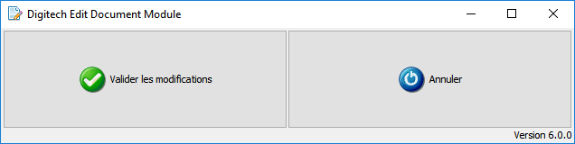
Vous pouvez également cliquer sur Annuler pour ne pas mémoriser les derniers changements effectués.
De manière générale, vous ne devrez normalement jamais refermer la fenêtre Digitech Edit Document Module, afin de ne pas avoir à télécharger le module à chaque fois qu’il est utilisé. Un message préventif s’affiche suite à une tentative de fermeture du module. Si vous avez toutefois refermé cet encadré, vous devrez télécharger à nouveau ce module lors d’une future utilisation.
Si vous lancez le module d’édition de document par erreur, et que le lien vers un éditeur du format correspondant n’a pas encore été défini, il est conseillé d’annuler cette opération en réduisant la fenêtre Digitech Edit Document Module (et non en la refermant) :
Lorsque le module d’édition de document est ouvert, l’icône correspondante sera ajoutée dans les icônes ou les icônes cachées de Windows :

Ce module devra rester ouvert pour le bon fonctionnement de l’application (ou une réinstallation du module sera nécessaire).
Dans le cas où vous souhaiteriez modifier le choix du logiciel associé à l’édition d’un type de fichier spécifique dans Arcade GED, vous
devrez modifier le fichier AIRS_OPENFILES.properties (à l’aide de Notepad++ par exemple), situé au type de chemin suivant sur l’ordinateur en question :
C:\Utilisateur__nom d’utilisateur\__AppData\Local\Temp\AIRS_OPENFILES.properties
Vous devez avoir accès aux fichiers cachés sur votre ordinateur pour accéder à ce fichier.
En ouvrant le fichier AIRS_OPENFILES.properties, vous pourrez, pour chaque extension, définir un chemin vers l’application la prenant en
charge ou réinitialiser ce lien. En effaçant un chemin dans le fichier, il vous sera à nouveau proposé de définir le logiciel à utiliser lors de
la modification d’un document de ce type dans Arcade GED :

16.2.2. Module de scan
Lors de la première utilisation du module de scan, en cliquant sur  pour scanner un fichier, le téléchargement du fichier du module sera automatiquement lancé :
pour scanner un fichier, le téléchargement du fichier du module sera automatiquement lancé :

Cliquez sur Ouvrir avec (ou l’option équivalente sur votre navigateur), le logiciel adéquat sera proposé par défaut.
Contrairement au module d’édition de texte, si vous refermez le module de scan en cliquant sur la croix de l’encadré, il sera simplement réduit et restera présent dans les icônes (ou les icônes cachées) de Windows :
Ce module ne devra pas être refermé dans les icônes Windows pour le bon fonctionnement de l’application (ou une réinstallation sera nécessaire).

17. Signature
|
Si vous utilisez une version d’ |
On distingue deux modes de signature :
-
La signature avec certificat (Lex Persona).
-
La signature sans certificat.
Seuls les fichiers au format ODT, DOC, DOCX, TIF et PDF pourront être signés numériquement dans Arcade GED.
Une fois un document signé, il sera automatiquement converti au format PDF.
Il existe deux principaux moyens d’utiliser les fonctionnalités liées à la signature :
-
Signer un document (Vue Document / Vue résultats).
-
Effectuer une demande de signature vers un signataire accrédité (Vue résultats).
17.1. Signer un document (onglet signature)
Afin de signer numériquement un document dans Arcade GED, vous devez au préalable disposer du droit de signature et d’un certificat de signature valide, clé USB ou carte à puce (pour la signature avec certificat uniquement).
Il sera également nécessaire d’installer les pilotes nécessaires au bon fonctionnement du certificat (pour la signature avec certificat uniquement).
La signature s’effectue généralement en Vue Document, par l’intermédiaire de l’onglet
Signature.
Il existe trois moyens d’accès à la signature d’un document :
-
Par l’intermédiaire de la bannette Documents à signer (affichage Vue résultats) : lorsqu’une demande de signature vous a été assignée (cf. Effectuer une demande de signature), vous pourrez accéder à ce document grâce à la bannette Documents à signer. Cette bannette affiche en Vue résultats l’ensemble des documents pour lesquels votre signature a été demandée.
-
Via la Vue Document : lors de l’accès à un document en modification, vous pouvez signer ce document par l’intermédiaire de l’onglet Signature.
-
Lorsque vous utilisez un profil uniquement dédié à la signature (cf. Profil Signataire uniquement).
Dans tous les cas, le module de signature est accessible en cliquant sur l’onglet Signature. Cette interface se présente généralement comme suit :
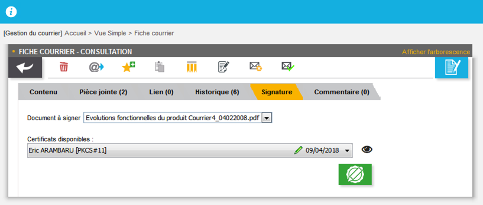
La partie supérieure du module est constitué d’un bandeau de notification décrivant les différentes étapes ou problèmes rencontrés durant la réalisation de la signature. La couleur du bandeau indique la nature de la notification. On retrouve les trois couleurs suivantes :
| Couleurs | Nature de la notification |
|---|---|
Bleu |
Il s’agit principalement de notification informative, décrivant une étape ou un problème mineur. Par exemple :
|
Vert |
Indique le bon déroulement d’une étape. Par exemple :
|
Rouge |
Indique la survenue d’une erreur (accompagnée du code correspondant), ou de l’échec d’une procédure. Par exemple :
|
17.1.1. Signature avec certificat
La liste déroulante intitulé Document à signer vous permet de sélectionner le document (la pièce jointe plus précisément) sur lequel apposer la signature :
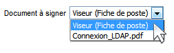
La liste déroulante Certificats disponibles, permet de sélectionner le certificat avec lequel apposer la signature. Si un seul certificat est disponible, il sera sélectionné par défaut :
Si aucun certificat n’est proposé, assurez-vous de bien avoir connecté la clé USB ou la carte à puce contenant le certificat (pensez également à vérifier la validité du certificat).
L’icône
 permet d’afficher les informations générales concernant ce certificat.
permet d’afficher les informations générales concernant ce certificat.
Une fois le document à signer et le certificat sélectionnés, vous pouvez démarrer l’étape de signature en cliquant sur  .
Après avoir cliqué sur , si le certificat est valide, vous devrez saisir le code confidentiel associé au certificat :
.
Après avoir cliqué sur , si le certificat est valide, vous devrez saisir le code confidentiel associé au certificat :
Une fois le mot de passe saisi, cliquez sur OK.
Après cette étape, le document est signé numériquement et une notification doit vous en informer :

|
Si l’ouverture du module de signature semble dysfonctionner, pensez à vérifier qu’aucun plugin
|

17.1.2. Signature sans certificat
Vous pouvez sélectionner la pièce jointe à signer via la liste déroulante Document à signer.
Vous pouvez ensuite démarrer l’étape de signature en cliquant sur
 :
:

Après cette étape, le document est signé et une notification doit vous en informer :

17.1.3. Demande de signature
Lorsque vous recevez une demande de signature (cf. Effectuer une demande de signature), la signature fonctionnera de manière légèrement différente. Toutes les demandes de signature vous étant adressées apparaissent dans la bannette Documents à signer. Une demande de signature pourra être validée en signant le document ou rejetée si le signataire la refuse.
Pour traiter une demande de signature, ouvrez le document correspondant puis cliquez sur l’onglet Signature. La pièce jointe sur laquelle est basée la demande de signature sera imposée (vous ne pourrez pas choisir d’autres pièces jointes tant que cette demande n’aura pas été traitée). Le nom de cette pièce jointe est indiqué à droite de la mention Document à signer :
Pour signer le document et accepter la demande de signature, cliquez sur
/
(la procédure précise est détaillée au chapitre précédent Signature sans certificat).
Pour refuser la demande de signature, cliquez sur . Pour valider un refus de signature, vous devrez saisir un commentaire via le nouvel écran Ajout/Modification d’un Commentaire (qui apparaît juste après avoir cliqué sur ) :

Cet écran est similaire à celui d’ajout de commentaires via l’onglet Commentaire (détaillé ici Onglet Commentaire). Une fois le commentaire définis, vous pouvez cliquer sur Enregistrer pour valider le refus de cette demande de signature. Le commentaire de justification du refus sera accessible à partir de l’onglet Commentaire du document correspondant.
Dès lors qu’une demande de signature est traitée (qu’elle soit refusée ou acceptée), le document correspondant disparaîtra de la bannette Documents à signer.
17.2. Documents signés
Tous documents contenant des documents signés seront accompagnés du symbole en Vue résultats :

En Vue Document, les pièces jointes signées apparaissent dans l’onglet Pièce jointe. Elles sont également accompagnées du symbole . Sur les pièces jointes signées, si le versioning[2] est activé, vous pourrez sélectionner les différentes versions de cette pièce jointe :

Dès qu’une pièce jointe est signée, une nouvelle version (avec signature) de celle-ci est ajoutée à la liste des pièces jointes disponibles. La Version en cours représente la dernière version de la pièce jointe. Si vous souhaitez consulter ou réaliser des actions sur une version précise, vous devrez au préalable la sélectionner dans le tableau via la liste déroulante. Dans certain cas, vous pourrez supprimer la pièce jointe sélectionnée en cliquant sur dans la colonne Action (hors version courante).
Dans certains cas, la signature électronique d’un document pourra déclencher l’apparition de nouveaux éléments sur celui-ci, comme une signature au format image, la date de signature, etc. Pour plus d’informations sur ces éléments, veuillez-consulter le chapitre Utilisation des balises.
17.3. Effectuer une demande de signature
Vous pouvez effectuer une demande de signature d’un document à un signataire (celle-ci ne nécessite aucun droit particulier).
Une demande de signature peut s’effectuer en Vue Document ou en Vue résultats.
Dans les deux cas, le bouton à utiliser pour effectuer une demande de signature sera le suivant :
 (ce bouton sera disponible uniquement si le module de signature est activé).
(ce bouton sera disponible uniquement si le module de signature est activé).
En Vue Document, ce bouton sera disponible à partir de la barre d’action :

Après avoir cliqué sur , l’écran de Sélection des documents à signer apparaît :
La liste déroulante Signataire vous permet de sélectionner le signataire vers lequel effectuer la demande de signature (il est impossible de désigner plusieurs signataires).
Sous la liste Signataire la liste des pièces jointes associées au document s’affiche. Sélectionnez la pièce que le signataire devra signer en cochant le bouton radio correspondant (il est impossible de sélectionner plusieurs pièces jointes simultanément).
Pour valider la demande de signature, cliquez sur Enregistrer (ou sur Annuler si vous ne souhaitez pas qu’elle soit prise en compte). Une fois une demande de signature effectuée, une notification vous en informe :

En Vue résultats, la demande de signature fonctionne de manière similaire, sauf que vous pourrez également sélectionner plusieurs documents et ainsi effectuer plusieurs demandes de signatures simultanément en cliquant sur
:

Lorsque plusieurs documents ont été sélectionnés pour une demande de signature, vous pourrez choisir le signataire vers lequel l’ensemble des demandes de signatures sera assigné. Vous pourrez également choisir, pour chaque document, la pièce jointe associée à la demande de signature en cochant le bouton correspondant.
Une fois le signataire et les pièces jointes souhaitées sélectionnés, cliquez sur Enregistrer pour envoyer les demandes de signatures correspondantes. Une notification vous informera du bon envoi des demandes de signature.
|
Si une demande de signature est effectuée sur un document pour lequel une autre demande de signature est déjà en cours, la demande précédente sera annulée au profit de la nouvelle. |
17.4. Profil Signataire uniquement
Selon votre utilisation d’Arcade GED, il est possible que vous soyez uniquement amenés à réaliser des signatures électroniques.
Dans ce cas, vous disposez probablement d’un profil d’utilisation spécifique dédié à la signature (DOSSIER_SIGNATURE_SEULEMENT).
Lorsque vous vous connectez avec un tel profil, vous n’aurez accès qu’à un nombre restreint de menus dans Arcade GED, vous permettant principalement de signer électroniquement les documents qui vous sont assignés.
Dès la connexion avec ce profil, une vue similaire à la Vue résultats s’affiche, mais seules les demandes de signature vous étant attribuées seront visibles :
Cette vue correspond à la bannette Documents à signer. Ce profil étant destiné à la signature de document vous étant attribués (via une demande de signature), vous n’aurez pas accès à un certain nombre d’actions, comme la recherche ou la création de document par exemple.
17.5. Utilisation des balises
Lorsqu’un document est amené à être signé, il est possible d’apposer des balises sur celui-ci, afin qu’après le dépôt de la signature, des données spécifiques apparaissent sur le document (date de signature, motif de signature, QR code, etc).
Ces balises au format texte, pourront être insérées dans des fichiers (modèles) au format ODT, DOC et DOCX.
Les balises doivent être directement intégrées au sein du document, en saisissant le texte correspondant, à l’endroit où la balise devra apparaître après signature. Il est d’usage de saisir les balises en police de couleur blanche (si document sur fond blanc) afin que le texte correspondant ne soit pas visible.
On retrouve par exemple les balises suivantes :
-
QR_CODE : permet l’apparition d’un QR code au niveau de la balise. Ce QR code permettra ensuite de récupérer des informations sur le document signé (date de signature, identifiant du document, etc).
-
SIGNATURE : permet l’apparition de la signature associée au signataire au niveau de la balise. Le fichier utilisé pour la signature se détermine via l’Admin AIRS, durant l’édition d’un utilisateur.
-
PARAPH : permet l’apparition du paraphe associé au signataire au niveau de la balise. Le fichier utilisé pour le paraphe se détermine via l’Admin AIRS, durant l’édition d’un utilisateur.
-
DATE : permet d’indiquer la date de la signature du document au niveau de la balise afin d’horodater le document.
18. Parapheur électronique
Le parapheur, si disponible, est accessible à partir de la Vue document, en mode édition :

Ce menu est divisé en différentes sections. Dans la partie supérieure, le champ Sélectionner le document principal à transmettre vers le parapheur vous permet de choisir via une liste déroulante le document que vous souhaitez signer.
Le champ Circuit vous permet de déterminer le circuit de validation à utiliser.
On retrouve sous cette section le tableau Sélectionner les documents annexes à transmettre vers le parapheur :
Ce tableau permet, dans le cas où plusieurs pièces jointes sont présentes, de sélectionner celles qui seront associées à cette demande.
Une fois tous les éléments obligatoires renseignés, le bouton
 situé dans le coin supérieur droit devient visible.
Vous pouvez cliquer sur
pour envoyer le document vers le parapheur.
Une fois l’envoi effectué, l’écran se met à jour avec notamment deux nouveaux boutons disponibles :
situé dans le coin supérieur droit devient visible.
Vous pouvez cliquer sur
pour envoyer le document vers le parapheur.
Une fois l’envoi effectué, l’écran se met à jour avec notamment deux nouveaux boutons disponibles :

-
 (disponible en mode Consultation uniquement) : permet d’actualiser le statut du document dans le cas où l’affichage n’est pas à jour.
L’état du document est décrit dans le tableau Historique situé en bas de l’interface.
(disponible en mode Consultation uniquement) : permet d’actualiser le statut du document dans le cas où l’affichage n’est pas à jour.
L’état du document est décrit dans le tableau Historique situé en bas de l’interface. -
 (disponible en mode Consultation uniquement) : permet d’annuler la demande de signature.
(disponible en mode Consultation uniquement) : permet d’annuler la demande de signature.
On retrouve les deux tableaux suivants dans la partie inférieure de l’interface :
-
Commentaires issus du parapheur : liste les commentaires faits sur le document depuis le parapheur :

-
Historique : affiche l’historique des actions liées au parapheur.
19. Rapports
La page Rapports, accessible à partir du chemin Suivi > Rapport, permet de visualiser l’ensemble des rapports configurés pour l'Organisation courante. Les rapports peuvent être affichés au format PDF (en cliquant sur l’icône ) ou au format HTML (en cliquant sur l’icône ). En cliquant sur le format souhaité, le rapport correspondant s’affiche dans une nouvelle fenêtre.
20. Préférences
La page Préférences, accessible à partir de la barre de navigation en cliquant sur la photo de votre avatar puis sur Préférences, permet de spécifier les préférences applicatives de l’utilisateur courant :
Les préférences sont sauvegardées dans le profil itinérant de l’utilisateur, ce qui permet à l’utilisateur connecté de retrouver ses préférences lors d’une future connexion. Les préférences utilisateurs sont réparties au travers différentes catégories (onglets) :
-
Données Personnelles : permet de personnaliser vos préférences utilisateurs.
-
Accueil : permet de déterminer les éléments affichés au niveau de l’écran d’accueil.
-
Application : regroupe des options générales sur
Arcade GED. -
Délégation : permet de gérer les délégations.
-
Administration : permet de gérer le niveau des logs (nécessaire pour la maintenance de l’application).
-
Accès rapide aux actions personnalisées : permet de personnaliser l’accès à certaines actions en Vue résultats.
-
Liste des contacts personnels : permet de gérer vos contacts personnels (utilisables lors de l’envoi de mail par exemple).
Cliquez sur l’action afin d’appliquer et de sauvegarder les modifications effectuées dans les préférences.
20.1. Données Personnelles
La section Données Personnelles des Préférences vous donne accès à différents paramètres classés par section :
20.1.1. Utilisateur
La section Utilisateur propose les paramètres suivants :
-
Nom : correspond au nom de votre utilisateur.
-
Prénom : correspondant au prénom de votre utilisateur.
-
Email : correspond à l’adresse mail liée à votre utilisateur.
-
Image avatar : vous pouvez ici choisir l’image de votre choix pour votre avatar dans AIRS Dossier. Il suffit de cliquer sur l’image pour afficher le menu correspondant :
Vous pouvez ici déposer l’image de votre choix dans la zone encadrée de pointillé ou bien cliquer dans cette zone pour importer manuellement l’image via l’explorateur de fichier. Une fois l’image importée, vous pourrez recentrer la zone à afficher si besoin.
20.1.2. Affichage
La section Affichage propose les paramètres suivants :
-
Flux sélectionné par défaut : permet de déterminer le flux sélectionné par défaut lors de la connexion à l’application.
-
Toujours afficher le flux par défaut en page d’accueil : permet d’afficher systématiquement le flux par défaut en page d’accueil.
-
Thème : Vous avez le choix entre le thème principal Arcade, le thème Airs Suite ou le thème Sombre
-
Taille de la police de caractère : permet de personnaliser la taille de la police à utiliser dans l’application. Cliquez sur la lettre A correspondant à la taille de police que vous souhaitez utiliser.
20.1.3. Tableau résultats
La section Tableau résultats propose les paramètres suivants :
-
Mode d’affichage : le mode Avancé permet de redimensionner la plupart des colonnes disponibles dans
Arcade GEDainsi que la possibilité d’afficher ou non certaines colonnes. Le mode Basique ne permet pas ces modifications au niveau des colonnes. -
Nombre de résultats : spécifie le nombre de résultats par page affiché par défaut dans l’application (Vue résultats, choix d’un service, etc.).
-
Densité : permet de choisir la densité des informations affichées à l’écran. On retrouve les 3 valeurs suivantes Espacement augmenté, Espacement normal et Espacement réduit/compact.
-
Dimension des imagettes : permet de définir la taille des imagettes (entre 180 et 300 pixels).
-
Afficher la pièce jointe en vue résultat par simple clic : en cochant cette option, un simple clic sur la ligne d’un résultat suffit pour afficher la pièce jointe correspondante. La sélection d’un résultat nécessitera en revanche un double clic. Lorsque cette option n’est pas cochée, un simple clic permet de sélectionner un résultat et un double clic permet l’affichage de la pièce jointe correspondante.
-
Cumuler les tris : permet de cumuler les tris dans les tableaux. Lorsque l’option est active l’ordre des tris tel qu’il est appliqué est indiqué sur la colonne correspondante par un numéro (1 pour le 1er tri, etc.).
-
Affichage de l’utilisateur : permet de déterminer comment sera affiché votre avatar et votre Nom/Prénom dans l’application.
20.1.4. Visionneuse PDF
La section Visionneuse PDF propose le paramètre suivant : * Niveau de zoom par défaut (visionneuse) : le niveau de zoom par défaut à appliquer.
20.1.5. Recherche plein-texte/Rapide
La section Recherche plein-texte/Rapide propose les paramètres suivants :
-
Afficher les aperçus en vue résultats plein-texte : permet d’activer l’aperçu des documents pour les résultats d’une recherche plein texte.
-
Lancer la recherche rapide par défaut (touche Entrée) : permet de lancer la recherche rapide par défaut en utilisant la touche Entrée du clavier.
-
Lancer la recherche dès le premier terme sélectionné : permet de démarrer automatiquement la recherche dès qu’un terme est sélectionné.
-
Lancer successivement les différents modes de recherche (en cas de résultat infructueux) : permet d’avoir recours à différents modes de recherche pour augmenter les chances d’obtenir un résultat.
20.1.6. Autres
L’onglet Données Personnelles propose également les options suivantes :
-
Afficher l’image de fond sur le panel de gauche : permet d’afficher une image en fond dans le bandeau latéral dédié aux bannettes.
-
Style du panneau vertical gauche : si l’option Afficher l’image de fond sur le panel de gauche n’est pas active, vous pouvez ici choisir le style de couleur attribué au bandeau latéral gauche dédié aux bannettes.
-
Activer les notifications sur les documents suivis : permet de générer des notifications pour les documents suivis.
-
Position des notifications : permet de déterminer la position d’apparition des notifications dans
Arcade GED. -
Ouverture automatique des pièces jointes : Affiche automatiquement la première des pièces jointes d’un document à son ouverture.
-
Pièce jointe réduite par défaut : (affiché si l’utilisateur dispose du droit d’affichage des pièces jointes en Vue résultats) : les pièces jointes sont ouvertes dans une vue repliée au bord de l’écran.
-
Rester en vue plan de classement après la création d’un doc. : permet de maintenir l’affichage de la vue Plan de classement (arborescente) sur le document père après la création d’un document enfant (si cochée). Si la case est décochée, à la création du document enfant en vue Plan de classement, la vue de consultation du document enfant correspondant s’ouvrira.
20.1.7. Accueil
L’onglet Accueil permet de personnaliser les panneaux qui seront visibles depuis la page d’accueil. Vous pouvez par exemple choisir d’afficher vos Favoris et vos Derniers documents consultés directement sur la page d’accueil :
Les différents panneaux affichables sont classés par catégorie. Il suffit de cocher la case située tout à gauche de l’élément correspondant pour l’afficher sur la page d’accueil d’Arcade GED.
On retrouve pour chaque panneau différentes colonnes :
-
Nom : indique le nom du panneau.
-
Description : indique une description du panneau.
-
Nombre d’éléments max : permet pour certains panneaux de choisir le nombre maximum d’éléments affichés simultanément.
-
Visible sur tous les flux : permet de déterminer si le panneau sera visible depuis différents flux.
-
Style : permet d’attribuer une couleur spécifique au panneau.
-
Entête minimisé : replie l’entête pour ne plus afficher que la barre de menu. Il est nécessaire que l’entête ne soit pas minimisé pour changer d’organisation courante.
-
Notifications activées : l’activation des notifications permet d’être averti immédiatement si une modification/suppression est apportée à un document favori suivi.
-
Panneaux visibles en page d’Accueil : permet de cocher les panneaux qui seront affichés en page d’accueil.
-
Extensions de fichier (visionneuse) : les fichiers dont les extensions sont cochées seront ouverts avec la visionneuse. Si vous utilisez la visionneuse embarquée de Dossier, les extensions décochées ici seront lues par la visionneuse liée au navigateur.
-
Annotation de type "note" incrustée (visionneuse) : les annotations de type "note" doivent-elles être incrustées dans l’image (case cochée) ou non (case décochée) ? Par défaut, les annotations de type "note" ne sont pas incrustées ; un marqueur est affiché et la note s’affiche lors du passage de la souris sur ce dernier.
-
Barre d’outils fixe : fixe la barre d’outils de la visionneuse. Par défaut, il faut passer le curseur de la souris en haut de la visionneuse pour que la barre d’outils apparaisse.
-
Java Web Start : permet de personnaliser les paramètres liés à chacun des modules Java Web Start (EditDocument (édition de document), ImageScan (numérisation) et Print (impression)). Vous pouvez pour chacun des modules choisir de surcharger ou non le port prédéfini (Surcharger le port), ainsi que de lancer le module correspondant dès la page d’accueil ou non (Lancement du module en page d’accueil). Si le module ne se lance pas dès la page d’accueil, il se lancera uniquement lorsqu’il sera utilisé (via une édition de document (doc/odt…), une numérisation ou une impression par exemple).
20.1.8. Application
La section Application des Préférences vous donne accès aux paramètres suivants :
-
Langue de l’application : spécifie la langue par défaut à utiliser.
-
Fuseau horaire : définit le fuseau horaire par défaut à utiliser.
-
Séparateur de décimales : définit le séparateur de décimal à utiliser pour les nombres réels dans AIRS Dossier.
-
Compléter la partie décimale par des zéros : permet l’affichage automatique de deux décimales au minimum pour les valeurs numériques saisies dans des champs (si cochée). Par exemple, en saisissant 30 dans un champ numérique, la valeur 30,00 sera affichée.
20.2. Délégation
La section Délégation des Préférences vous permet de gérer les délégations attribuées aux utilisateurs. La page Délégation vous permet de sélectionner une ou plusieurs personnes délégataires à qui vous choisissez de déléguer vos attributions pendant une durée déterminée ou indéterminée.
Le délégataire a accès à toutes les actions possibles de l’utilisateur qui lui a délégué ses attributions. L’auteur de l’action (ajout d’un commentaire, historique, etc) sera inscrit dans l’historique de la manière suivante : « Michèle Durand par délégation de Fernand Martin ». Le délégataire accède aux bannettes du délégant et à ses droits. En revanche, le délégataire ne peut pas accéder aux paramètres du délégant.
La liste des délégués s’affiche sous forme tabulaire. Pour ajouter une délégation, cliquez sur l’action ; la fenêtre modale Ajout/Modification d’une délégation s’ouvre :
Une délégation contient les paramètres suivants :
-
Utilisateur : spécifie l’utilisateur pour qui autoriser la délégation (le délégué).
-
Date de début : détermine la date à partir de laquelle la délégation est activée.
-
Date de fin : détermine la date à partir de laquelle la délégation prend fin. Si la Date de fin n’est pas spécifiée, la délégation sera active indéfiniment.
Une fois la délégation paramétrée, cliquez sur ENREGISTRER pour la confirmer.
Il est possible de modifier une délégation en la cochant préalablement dans le tableau, puis en cliquant sur l’action correspondante.
Pour supprimer une délégation, il faut au préalable la cocher puis cliquer sur l’action
 .
Un message de confirmation s’affiche avant d’appliquer la suppression.
.
Un message de confirmation s’affiche avant d’appliquer la suppression.
|
Il est impossible de réaliser plusieurs délégations espacées dans le temps pour un même utilisateur. Dès qu’une délégation est paramétrée pour un utilisateur, celui-ci n’apparaitra plus comme disponible dans la liste des utilisateurs sélectionnable, lors de l’ajout d’une nouvelle délégation. |
Lorsqu’un utilisateur reçoit une délégation, il peut y accéder à tout moment à partir de l’encadré utilisateur via la liste déroulante Délégation :
Il suffit de sélectionner l’utilisateur pour lequel vous souhaitez utiliser la délégation :
Sélectionnez l’utilisateur dont vous souhaitez utiliser la délégation dans la liste déroulante. Une fois un utilisateur sélectionné, vous disposez de l’ensemble de ses droits. Pour ne plus utiliser la délégation, sélectionnez la valeur Aucune (moi) dans la liste déroulante Délégation.
20.3. Administration
L’onglet Administration permet de paramétrer les logs (historique des évènements de l’application) qui seront envoyés à l’équipe chargée de la maintenance du logiciel en cas de problème par exemple.
20.4. Actions personnalisées
L’Accès rapide aux actions personnalisées permet de déterminer par flux les actions qui seront accessibles via la barre d’outils dans la Vue résultats. Si aucune action n’est proposée dans ce menu, cela signifie que vous ne disposez d’aucune action personnalisée pour le flux sélectionné.
Toutes les icônes qui ne sont pas cochées ici seront accessibles par l’intermédiaire de l’icône en Vue résultats :

Les icônes cochées dans l’onglet Accès rapide aux actions personnalisées apparaitront à l’inverse directement dans la barre d’action.
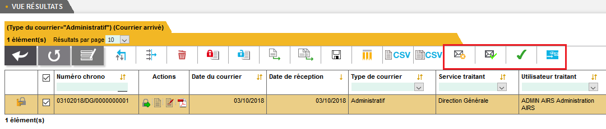
|
Vous pourrez également accéder aux actions personnalisées à l’aide des raccourcis préalablement définis lors du paramétrage de l’application. L’accès à ces raccourcis se fait en appuyant simultanément sur la touche alt et la touche définie en tant que raccourci (les raccourcis sont indiqués dans l’info-bulle de l’action correspondante). |
20.5. Liste des contacts personnels
La liste des contacts vous permet d’ajouter de nouveaux contacts que vous pourrez utiliser lors de l’envoi de mail.
Le menu Liste des contacts personnels est disponible à partir des Préférences utilisateurs :
Le tableau présent ici liste les contacts personnels que vous avez ajoutés (les contacts présents en base population ne sont pas listés ici) ou auxquels vous avez envoyé un mail.
Pour ajouter un nouveau contact, cliquez sur le bouton situé dans le bandeau supérieur. Vous devrez ensuite compléter les informations liées à ce contact :
-
Nom à afficher : correspond au nom du contact tel qu’il apparaitra (ou qu’il sera suggéré en saisie prédictive).
-
Adresse électronique : correspond à l’adresse mail du contact.
Une fois le contact paramétré, cliquez sur Enregistrer pour l’ajouter à la liste des contacts.
Vous pouvez éditer ou supprimer un contact existant en le sélectionnant dans le tableau listant les contacts :
L’icône  permet de supprimer le contact correspondant.
Une demande de confirmation vous sera adressée avant la suppression effective.
permet de supprimer le contact correspondant.
Une demande de confirmation vous sera adressée avant la suppression effective.
L’icône permet de modifier le contact correspondant.
21. À propos d’AIRS Dossier
Le menu À propos de AIRS Dossier est accessible depuis l’encadré utilisateur :
En cliquant sur À propos de AIRS Dossier le panneau suivant s’affiche :
On retrouve ici les informations de versions des différents éléments de dossier (application et serveurs). Vous pouvez appuyer sur Fermer pour refermer cet affichage.
21.1. Notes de version
Les notes de versions permettent de connaitre les nouveautés apportées à une version spécifique d’Arcade GED. Vous pouvez accéder aux Notes de version de dossier en cliquant sur le bouton correspondant. Les notes de version s’affichent dans un nouvel onglet de votre navigateur :
Vous pouvez cliquer sur le numéro de version pour laquelle vous souhaitez afficher le descriptif des nouveautés correspondantes (8.0.0, 7.2.0 etc.).
22. Raccourcis
Cette section détaille certains raccourcis clavier utilisables dans l’application :
22.1. Raccourcis globaux
L’ensemble des actions personnalisées peut être associé à un raccourci clavier (dont la valeur dépend de votre paramétrage).
22.2. Vue Réponse et Résultat
-
Les flèches haut et bas permettent de naviguer entre les éléments :
-
Il est possible de télécharger la pièce jointe active avec le raccourci Ctrl+Alt+D (valeur par défaut).
-
Il est possible de réaliser des actions d’interactions tel que valider ou appliquer via le raccourci Ctrl+Entrée. Sur la page de Création, Ctrl+Entrée permet la création d’un nouveau document.
22.2.1. Visionneuse
Vous pouvez utiliser les raccourcis clavier suivant durant la consultation de document dans la visionneuse :
-
Flèche droite → : affiche la page suivante du document.
-
Flèche gauche ← : affiche la page précédente du document.
-
Touche plus + : augmente le niveau de zoom d’un palier.
-
Touche moins - : diminue le niveau de zoom d’un palier.